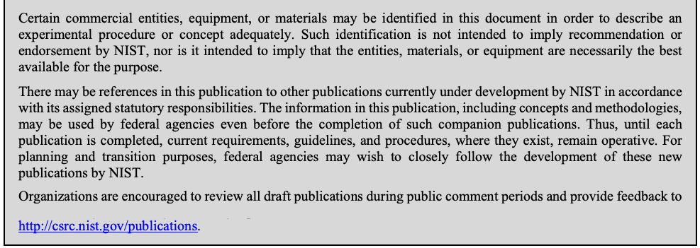
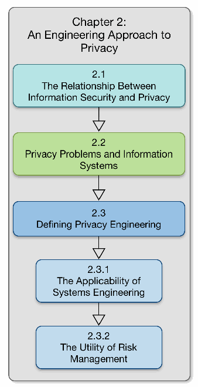
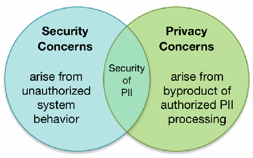
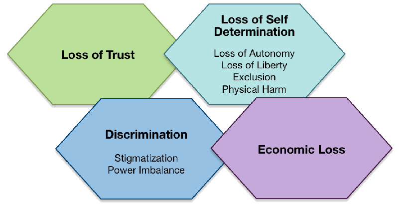
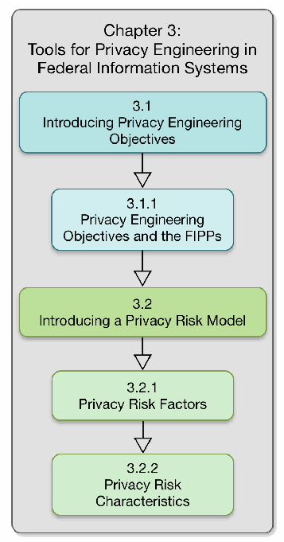

NIST IR 8062 日本語訳
英語タイトル : An Introduction to Privacy Engineering and Risk Management in Federal Systems日本語タイトル : 連邦システムにおけるプライバシーエンジニアリングとリスク管理の入門
公開日 : 2017-01-04
原文URL : https://csrc.nist.gov/pubs/ir/8062/final
翻訳編集 : 自動生成（有志による非公式の日本語訳）, 原文取得日 : 2026-10-31, 訳文 : 489 / 491 ブロック
[要約] NIST IR 8062 は、連邦システムにおけるプライバシーエンジニアリングとリスク管理の概念を紹介する報告書です。これらの概念は、連邦システム内のプライバシーリスクの理解と伝達を助ける共通語彙の基礎となり、プライバシー原則の効果的な実装を促すとされています。プライバシーエンジニアリングとリスク管理の適用を支える二つの主要な構成要素として、プライバシーエンジニアリングの目標とプライバシーリスクモデルを導入します。また、これらの暫定的な概念を実行可能なガイダンスへ発展させるためのロードマップを示し、情報セキュリティのリスク管理に関する既存の NIST ガイダンスを補完するものと位置づけています。
NISTIR 8062
NISTIR 8062
An Introduction to Privacy Engineering and Risk Management in Federal Systems
連邦システムにおけるプライバシーエンジニアリングとリスク管理の入門
Sean Brooks
Michael Garcia
Naomi Lefkovitz
Suzanne Lightman
Ellen Nadeau
Sean Brooks
Michael Garcia
Naomi Lefkovitz
Suzanne Lightman
Ellen Nadeau
This publication is available free of charge from:
この刊行物は次の場所から無料で入手できます。
https://doi.org/10.6028/NIST.IR.8062
https://doi.org/10.6028/NIST.IR.8062
［NIST のロゴ。公的な標章のため、この非公式サイトには掲載していません。原本 PDF を参照してください。］
NISTIR 8062
NISTIR 8062
An Introduction to Privacy Engineering and Risk Management in Federal Systems
連邦システムにおけるプライバシーエンジニアリングとリスク管理の入門
Sean Brooks
Michael Garcia
Naomi Lefkovitz
Suzanne Lightman
Ellen Nadeau
Information Technology Laboratory
Sean Brooks
Michael Garcia
Naomi Lefkovitz
Suzanne Lightman
Ellen Nadeau
情報技術研究所
This publication is available free of charge from:
この刊行物は次の場所から無料で入手できます。
https://doi.org/10.6028/NIST.IR.8062
https://doi.org/10.6028/NIST.IR.8062
January 2017
2017 年 1 月
U.S. Department of Commerce
Penny Pritzker, Secretary
米国商務省
Penny Pritzker 長官
National Institute of Standards and Technology
Willie May, Under Secretary of Commerce for Standards and Technology and Director
国立標準技術研究所
Willie May、NIST 所長兼商務次官（標準・技術担当）
National Institute of Standards and Technology Internal Report 8062
49 pages (January 2017)
国立標準技術研究所 内部報告書 8062
49 ページ（2017 年 1 月）
This publication is available free of charge from:
https://doi.org/10.6028/NIST.IR.8062
この刊行物は次の場所から無料で入手できます。
https://doi.org/10.6028/NIST.IR.8062
Certain commercial entities, equipment, or materials may be identified in this document in order to describe an experimental procedure or concept adequately. Such identification is not intended to imply recommendation or endorsement by NIST, nor is it intended to imply that the entities, materials, or equipment are necessarily the best available for the purpose.
原本PDFの抜粋画像

本書では、実験的な手順や概念を適切に説明するために、特定の商業的な組織、装置、または資材を挙げている場合があります。こうした記載は、NIST による推奨や推薦を意味するものではなく、挙げられた組織、資材、または装置が目的に対して必ずしも最良であることを意味するものでもありません。
There may be references in this publication to other publications currently under development by NIST in accordance with its assigned statutory responsibilities. The information in this publication, including concepts and methodologies, may be used by federal agencies even before the completion of such companion publications. Thus, until each publication is completed, current requirements, guidelines, and procedures, where they exist, remain operative. For planning and transition purposes, federal agencies may wish to closely follow the development of these new publications by NIST.
本刊行物には、NIST が法令で定められた責務に従って現在策定中の、ほかの刊行物への言及が含まれている場合があります。本刊行物の情報は、概念や方法論を含め、そうした関連刊行物の完成前であっても、連邦機関が使用してもよいです。したがって、各刊行物が完成するまでは、現行の要件、ガイドライン、手順が存在する場合は、それらが引き続き有効です。計画および移行のため、連邦機関は、NIST によるこれらの新しい刊行物の策定状況を注意深く追うことを検討してもよいです。
Organizations are encouraged to review all draft publications during public comment periods and provide feedback to http://csrc.nist.gov/publications.
組織は、パブリックコメント期間中にすべてのドラフト刊行物を確認し、http://csrc.nist.gov/publications にフィードバックを寄せることが推奨されています。
Comments on this publication may be submitted to: privacyeng@nist.gov
本刊行物へのコメントは次の宛先に提出できます。privacyeng@nist.gov
National Institute of Standards and Technology
Attn: Applied Cybersecurity Division, Information Technology Laboratory
100 Bureau Drive (Mail Stop 2000) Gaithersburg, MD 20899-2000
Email: privacyeng@nist.gov
National Institute of Standards and Technology
Attn: Applied Cybersecurity Division, Information Technology Laboratory
100 Bureau Drive (Mail Stop 2000) Gaithersburg, MD 20899-2000
Email: privacyeng@nist.gov
All comments are subject to release under the Freedom of Information Act (FOIA).
すべてのコメントは、情報自由法（FOIA）に基づく公開の対象となります。
Reports on Computer Systems Technology
コンピュータシステム技術に関する報告書
The Information Technology Laboratory (ITL) at the National Institute of Standards and Technology (NIST) promotes the U.S. economy and public welfare by providing technical leadership for the Nation’s measurement and standards infrastructure. ITL develops tests, test methods, reference data, proof of concept implementations, and technical analyses to advance the development and productive use of information technology. ITL’s responsibilities include the development of management, administrative, technical, and physical standards and guidelines for the cost-effective security and privacy of other than national security-related information in federal systems.
国立標準技術研究所（NIST）の情報技術研究所（ITL）は、国の測定・標準基盤に対して技術的なリーダーシップを提供することで、米国経済と公共の福祉の向上に寄与しています。ITL は、情報技術の開発と生産的な利用を進めるために、テスト、テスト方法、参照データ、概念実証の実装、技術分析を開発しています。ITL の責務には、連邦システムにおける国家安全保障以外の情報について、費用対効果の高いセキュリティおよびプライバシーのための管理上、運用上、技術上、物理上の標準とガイドラインを策定することが含まれます。
Abstract
要旨
This document provides an introduction to the concepts of privacy engineering and risk management for federal systems. These concepts establish the basis for a common vocabulary to facilitate better understanding and communication of privacy risk within federal systems, and the effective implementation of privacy principles. This publication introduces two key components to support the application of privacy engineering and risk management: privacy engineering objectives and a privacy risk model.
本書は、連邦システムにおけるプライバシーエンジニアリングとリスク管理の概念を紹介します。これらの概念は、連邦システム内のプライバシーリスクについての理解とコミュニケーションを促進し、プライバシー原則を効果的に実装するための共通の語彙の基礎を確立します。本刊行物は、プライバシーエンジニアリングとリスク管理の適用を支援する 2 つの主要な構成要素、すなわちプライバシーエンジニアリング目標とプライバシーリスクモデルを紹介します。
Keywords
キーワード
Computer security; cybersecurity; information security; privacy; risk management; systems engineering
コンピュータセキュリティ、サイバーセキュリティ、情報セキュリティ、プライバシー、リスク管理、システムエンジニアリング
Acknowledgements
謝辞
The authors wish to thank the following individuals for participating in the preparation of this document: Jeremy Berkowitz, James Dever, Simson Garfinkel, Meredith Jankowski, and Colin Soutar. They’d also like to recognize Kelley Dempsey, Marc Groman, Mat Heyman, Kat Megas, Rebecca Richards, and Ron Ross for their role in the review process. The authors are particularly grateful to Simson Garfinkel, who was so generous with his time and thoughtful feedback. A special note of thanks goes to Kaitlin Boeckl, who developed the graphics found herein. And finally, in developing the privacy risk model, the authors greatly appreciate the insights from the pilot programs funded by NIST pursuant to the National Strategy for Trusted Identities in Cyberspace (NSTIC).
著者は、本書の作成に参加してくださった Jeremy Berkowitz、James Dever、Simson Garfinkel、Meredith Jankowski、Colin Soutar の各氏に感謝します。また、レビュー過程での役割に対して、Kelley Dempsey、Marc Groman、Mat Heyman、Kat Megas、Rebecca Richards、Ron Ross の各氏にも謝意を表します。著者は特に、惜しみなく時間を割き、思慮深いフィードバックをくださった Simson Garfinkel 氏に深く感謝します。本書の図版を作成した Kaitlin Boeckl 氏には、特別な謝意を表します。最後に、プライバシーリスクモデルの策定にあたり、National Strategy for Trusted Identities in Cyberspace（NSTIC）に基づいて NIST が資金提供したパイロットプログラムから得られた洞察に、著者は深く感謝します。
Executive Summary
エグゼクティブサマリー
NIST research in information technology—including cybersecurity, cloud computing, big data, and the Smart Grid and other cyber-physical systems—aims to improve the innovation and competitiveness that bring great advancements to U.S. national and economic security and quality of life. Much of this research pertains to the trustworthiness of these information technologies and the systems in which they are incorporated. Given concerns about how information technologies may affect privacy at individual and societal levels, the purpose of this publication is to provide an introduction to how systems engineering and risk management could be used to develop more trustworthy systems that include privacy as an integral attribute.
サイバーセキュリティ、クラウドコンピューティング、ビッグデータ、スマートグリッドなどのサイバーフィジカルシステムを含む、NIST の情報技術の研究は、米国の国家安全保障と経済的安全保障、そして生活の質に大きな進歩をもたらすイノベーションと競争力の向上を目指しています。この研究の多くは、これらの情報技術と、それらが組み込まれたシステムの信頼性に関わるものです。情報技術が個人や社会のレベルでプライバシーにどのような影響を与えるかについての懸念を踏まえ、本刊行物の目的は、プライバシーを不可欠な属性として含む、より信頼できるシステムを開発するために、システムエンジニアリングとリスク管理をどのように使用できるかについて、入門を提供することです。
In addition, the Office of Management and Budget’s recent update to Circular No. A-130 includes a new emphasis on managing privacy risk. Federal agencies will need guidance on repeatable and measurable approaches to bridge the distance between privacy principles and their effective implementation in systems.
さらに、行政管理予算局（OMB）による Circular No. A-130 の最近の更新では、プライバシーリスクの管理が新たに重視されています。連邦機関には、プライバシー原則と、システムへのその効果的な実装との間の隔たりを埋める、反復可能で測定可能なアプローチに関するガイダンスが必要になります。
Extensive guidance already exists for information security. In developing an engineering approach to privacy, it is important to understand the relationship—and particularly the distinctions—between information security and privacy. Doing so will improve understanding of how to apply established systems engineering and risk management processes to addressing privacy concerns. Although unauthorized access to personally identifiable information (PII) is a subset of information security and a critical aspect of privacy, there is a far less developed understanding of how to identify and address the risks to individuals’ privacy that extend beyond unauthorized access to PII.
情報セキュリティについては、すでに広範なガイダンスが存在します。プライバシーに対するエンジニアリングのアプローチを開発するにあたっては、情報セキュリティとプライバシーの関係、特にその違いを理解することが重要です。そうすることで、確立されたシステムエンジニアリングとリスク管理のプロセスを、プライバシーの懸念への対処にどのように適用するかについての理解が深まります。個人を特定できる情報（PII）への不正アクセスは、情報セキュリティの一部であり、プライバシーの重要な側面ですが、PII への不正アクセスにとどまらない、個人のプライバシーに対するリスクをどのように特定して対処するかについての理解は、はるかに未発達です。
For purposes of this publication, privacy engineering means a specialty discipline of systems engineering focused on achieving freedom from conditions that can create problems for individuals with unacceptable consequences that arise from the system as it processes PII. This definition provides a frame of reference for identifying a privacy-positive outcome for federal systems and a basis for privacy risk analysis that has been lacking in the privacy field.
本刊行物の目的上、プライバシーエンジニアリングとは、システムが PII を処理する際に生じる、個人にとって許容できない結果を伴う問題を引き起こし得る状況からの解放を達成することに焦点を当てた、システムエンジニアリングの専門分野を意味します。この定義は、連邦システムにおいてプライバシーに配慮した成果を特定するための参照枠と、プライバシー分野で欠けていたプライバシーリスク分析の基礎を提供します。
To support agencies’ ability to conduct privacy engineering, this publication introduces a set of privacy engineering objectives—predictability, manageability, and disassociability—to help system engineers focus on the types of capabilities the system needs in order to demonstrate how an agency’s privacy policies and system privacy requirements have been implemented. In addition, this report introduces a privacy risk model to enable agencies to conduct more consistent privacy risk assessments based on the likelihood that an operation performed by a system would create a problem for individuals when processing PII—a problematic data action—and the impact of the problematic data action should it occur.
機関がプライバシーエンジニアリングを実施する能力を支援するために、本刊行物は、プライバシーエンジニアリング目標、すなわち予測可能性、管理可能性、非関連付け性の集合を紹介します。これは、機関のプライバシーポリシーとシステムのプライバシー要件がどのように実装されたかを示すために、システムが必要とする能力の種類にシステムエンジニアが注力できるようにするものです。さらに、本報告書は、システムが実行する処理が、PII を処理する際に個人にとって問題を生じさせる可能性（問題のあるデータアクション）と、問題のあるデータアクションが生じた場合のその影響に基づいて、機関がより一貫したプライバシーリスクアセスメントを実施できるようにする、プライバシーリスクモデルを紹介します。
This report concludes with a general roadmap for evolving these preliminary concepts into actionable guidance—complementary to existing NIST guidance for information security risk management—so that agencies may more effectively meet their obligations under Circular A-130 and other relevant policies.
本報告書は、これらの予備的な概念を、情報セキュリティリスク管理に関する NIST の既存のガイダンスを補完する、実行可能なガイダンスへと発展させるための一般的なロードマップで締めくくります。これにより、機関は Circular A-130 およびその他の関連する政策に基づく義務を、より効果的に果たせるようになります。
Table of Contents
目次
List of Appendices
付録の一覧
List of Figures
図の一覧
1 Introduction
1 はじめに
NIST research in information technology—including cybersecurity, cloud computing, big data, and the Smart Grid and other cyber-physical systems—aims to improve the innovation and competitiveness that bring great advancements to U.S. national and economic security and quality of life. Much of this research pertains to the trustworthiness of these information technologies and the systems in which they are incorporated.
サイバーセキュリティ、クラウドコンピューティング、ビッグデータ、そしてスマートグリッドやその他のサイバーフィジカルシステムを含む、NIST の情報技術の研究は、米国の国家安全保障と経済的安全保障、そして生活の質に大きな進歩をもたらすイノベーションと競争力の向上を目指しています。この研究の多くは、これらの情報技術と、それらが組み込まれたシステムの信頼性に関わるものです。
Given concerns about how information technologies may affect privacy at individual and societal levels, building trustworthy systems demands the development of consistent approaches and guidance for translating widely recognized, high-level privacy principles—such as the Fair Information Practice Principles (FIPPs)—into effective system privacy requirements.2
情報技術が個人や社会のレベルでプライバシーにどのような影響を与えるかについての懸念を踏まえると、信頼できるシステムを構築するには、公正情報実践原則（FIPPs）などの広く認められた高水準のプライバシー原則を、効果的なシステムのプライバシー要件へと変換するための、一貫したアプローチとガイダンスを開発することが求められます。2
To date, NIST guidance on the trustworthiness of systems has focused primarily on frameworks and processes that address the security objectives of confidentiality, integrity and availability.3 Although unauthorized access to personally identifiable information (PII) is a subset of information security and a critical aspect of privacy, there is a far less developed understanding of how the system impacts the individuals’ privacy and how to identify and address risks that extend beyond unauthorized access to PII.4
これまで、システムの信頼性に関する NIST のガイダンスは、主に機密性、完全性、可用性というセキュリティ目標に対処するフレームワークとプロセスに焦点を当ててきました。3 個人を特定できる情報（PII）への不正アクセスは、情報セキュリティの一部であり、プライバシーの重要な側面ですが、システムが個人のプライバシーにどのような影響を与えるか、また PII への不正アクセスにとどまらないリスクをどのように特定して対処するかについての理解は、はるかに未発達です。4
Trustworthiness & Privacy
信頼性とプライバシー
Trustworthiness simply means worthy of being trusted to fulfill whatever critical requirements may be needed for a particular component, subsystem, system, network, application, mission, enterprise, or other entity.1
信頼性とは、単に、特定のコンポーネント、サブシステム、システム、ネットワーク、アプリケーション、ミッション、エンタープライズ、またはその他のエンティティに必要となり得る、あらゆる重要な要件を満たすことを任せるに値することを意味します。1
From a privacy perspective, a trustworthy system is a system that meets specific privacy requirements in addition to meeting other critical requirements.
プライバシーの観点からは、信頼できるシステムとは、ほかの重要な要件を満たすことに加えて、特定のプライバシー要件を満たすシステムのことです。
For example, as part of its work with Smart Grid technology, NIST and its partners in the energy sector have noted public concern regarding the deployment of smart meters due to the ability of these meters to collect, record, and distribute highly granular information about household electrical use. Such information could be used, for example, to learn when a house was occupied and what appliances they were using. A report on this general topic concluded: “While many of the types of data items accessible through the smart grid are not new, there is now the possibility that other parties, entities or individuals will have access to those data items; there are also many new uses for and ways to analyze the collected data, which may raise substantial privacy concerns.”5
たとえば、NIST とエネルギー部門のパートナーは、スマートグリッド技術に関する取り組みの一環として、スマートメーターが世帯の電力使用に関する非常に細かい情報を収集、記録、配布できることから、その導入に対する一般市民の懸念に注目してきました。そのような情報は、たとえば、住宅にいつ人がいたか、どのような家電を使っていたかを知るために使われる可能性があります。この一般的な話題に関する報告書は、次のように結論づけています。「スマートグリッドを通じてアクセスできるデータ項目の種類の多くは新しいものではありませんが、ほかの当事者、エンティティ、個人がそれらのデータ項目にアクセスできる可能性が生じています。また、収集されたデータを分析する新たな用途や方法も数多くあり、それらは重大なプライバシーの懸念を生じさせる可能性があります。」5
In another example, as part of President Obama’s Precision Medicine Initiative (PMI),6 the Veteran’s Administration’s Privacy Impact Assessment (PIA) for its Genomic Information System for Integrated Science research program cataloged specific risks, including, but not limited to:
別の例として、オバマ大統領の Precision Medicine Initiative（PMI）6 の一環として、退役軍人省の Genomic Information System for Integrated Science 研究プログラムのプライバシー影響評価（PIA）は、次のような特定のリスクを一覧にしました（これらに限定されません）。
•“The re-identification of information linked to a specific individual, notwithstanding representations that a participant’s information would be anonymous or not identifiable…
•「参加者の情報は匿名である、または識別できないという表明にもかかわらず、特定の個人に結び付いた情報が再識別されること…
•Participants misunderstand or underestimate the extent to which they have consented to share their data…
•参加者が、自らのデータの共有に同意した範囲を誤解または過小評価すること…
•The perception of a loss of medical or other privacy leading to a change in behavior.
•医療上のプライバシーまたはその他のプライバシーが失われたという認識が、行動の変化につながること。
•Embarrassment or stigma associated with certain information should that information be released or tied to the individual…
•特定の情報が公表された場合、または個人に結び付けられた場合に生じる、その情報に関連した当惑や烙印…
•Perceived or real risks that information could be used to discriminate against a group of individuals in different contexts such as employment or insurance discrimination…
•雇用や保険における差別など、さまざまな状況で、情報が個人の集団に対する差別に使用され得るという、認識された、または現実のリスク…
•Information is accessed by law enforcement for reasons beyond research…”7
•情報が、研究を超えた理由で法執行機関によってアクセスされること…」7
There are many other examples of systems that raise these types of privacy concerns, including ones in urban operations, transportation, and big data analytics.8 These examples also demonstrate that determining the boundary of a system is an important consideration because privacy concerns can arise at any point where PII is processed, including, but not limited to collection, creation, analysis, use, storage, dissemination, disclosure, or disposal. A system boundary is often related to the scope of authorization for operating the system; however, there may be stages of PII processing occurring outside of this authorization scope that give rise to privacy concerns in the system.9
都市運用、交通、ビッグデータ分析など、この種のプライバシー上の懸念を生じさせるシステムの例はほかにも数多くあります。8 これらの例はまた、システム境界の決定が重要な考慮事項であることも示しています。PII が処理されるあらゆる時点でプライバシー上の懸念が生じ得るためです。これには、収集、作成、分析、使用、保存、流布、開示、廃棄などが含まれますが、これらに限定されません。システム境界は、多くの場合、システムを運用するための認可の範囲に関連していますが、この認可範囲の外で行われる PII 処理の段階が、システムにおけるプライバシー上の懸念を生じさせる場合があります。9
In July 2016, the Office of Management and Budget (OMB) released an update to Circular No. A-130 that requires agencies to apply the NIST Risk Management Framework (RMF) in their privacy programs. That OMB update also includes a new emphasis on managing privacy risk beyond solely compliance with privacy laws, regulations and policies.10 Although agencies should already be using PIAs to address privacy risk,11 it is more difficult for them to do it consistently in the absence of a model that enables a repeatable and measurable process to assess privacy risk. Repeatability is important so that the process can be performed consistently over time (not that the outcome is necessarily the same each time). Measurability matters, so that agencies can demonstrate the effectiveness of privacy controls in addressing identified privacy risks.
2016 年 7 月、行政管理予算局（OMB）は、機関に対し、プライバシープログラムに NIST リスク管理フレームワーク（RMF）を適用することを求める Circular No. A-130 の更新を公表しました。この OMB の更新には、プライバシーに関する法律、規制、方針への準拠のみにとどまらない、プライバシーリスクの管理に対する新たな重視も含まれています。10 機関は、プライバシーリスクに対処するために、すでに PIA を使用しているはずですが、11 プライバシーリスクを評価するための反復可能で測定可能なプロセスを可能にするモデルがなければ、それを一貫して行うことはより困難です。反復可能性は、プロセスを時間を通じて一貫して実行できるようにするために重要です（毎回の結果が必ず同じになるという意味ではありません）。測定可能性は、機関が、特定されたプライバシーリスクに対処するうえでのプライバシー管理策の有効性を示せるようにするために重要です。
1.1 Purpose and Scope
1.1 目的と範囲
This publication:
本刊行物は、次のことを行います。
•Lays the groundwork for future guidance on how federal agencies will be able to incorporate privacy as an attribute of trustworthy systems through the management of privacy as a collaborative, interdisciplinary engineering practice;
•プライバシーを、協働的で学際的なエンジニアリングの実践として管理することを通じて、連邦機関がプライバシーを信頼できるシステムの属性として組み込めるようにする方法に関する、将来のガイダンスの基礎を築きます。
•Introduces a set of objectives for privacy engineering and a new model for assessing privacy risks in federal systems; and
•連邦システムにおけるプライバシーリスクを評価するための、プライバシーエンジニアリングの目標の集合と新しいモデルを紹介します。
•Provides a roadmap for evolving these preliminary concepts into actionable guidance, complementary to existing NIST guidance for information security risk management, so that agencies may more effectively meet their obligations under Circular A-130 and other relevant policies.12
•これらの予備的な概念を、情報セキュリティリスク管理に関する NIST の既存のガイダンスを補完する、実行可能なガイダンスへと発展させるためのロードマップを提供し、機関が Circular A-130 およびその他の関連する政策に基づく義務をより効果的に果たせるようにします。12
This is an introductory report intended to foster further discussion. Future development of guidance comprehensive enough to promote compliance with policy directives will be conducted through collaborative and open processes in order to better support the operational needs of agency privacy programs.
これは、さらなる議論を促すことを意図した入門的な報告書です。政策指令への準拠を促進するのに十分に包括的なガイダンスの今後の策定は、機関のプライバシープログラムの運用上のニーズをより適切に支援するために、協働的で公開されたプロセスを通じて行われます。
1.2 Audience
1.2 想定読者
Addressing privacy is a cross-organizational challenge. To do so effectively, agencies need consistent terminology as well as common processes that complement existing enterprise risk management and systems engineering processes. The audience for this document includes those involved in developing systems and evaluating risk, including individuals with:
プライバシーへの対処は、組織横断的な課題です。これを効果的に行うために、機関には、既存のエンタープライズリスク管理およびシステムエンジニアリングのプロセスを補完する、一貫した用語と共通のプロセスが必要です。本書の想定読者には、システムの開発やリスクの評価に関わる人々が含まれ、次のような責任を持つ個人が該当します。
•Privacy and/or system oversight responsibilities (e.g., senior agency officials for privacy, chief information officers, chief information security officers, agency heads, chief privacy officers);
•プライバシーまたはシステムの監督責任（たとえば、プライバシー担当機関上級職員、最高情報責任者、最高情報セキュリティ責任者、機関の長、最高プライバシー責任者）。
•Implementation and operational responsibilities in systems, including responsibilities for risk management and the development of security and privacy plans (e.g., mission/business owners, system owners, information owners/stewards, system administrators, system security officers, privacy officers, analysts);
•システムにおける実装と運用の責任。リスク管理や、セキュリティ計画およびプライバシー計画の策定に関する責任を含みます（たとえば、ミッション/事業オーナー、システムオーナー、情報オーナー/管理者、システム管理者、システムセキュリティ担当官、プライバシー担当官、アナリスト）。
•System engineering and design responsibilities (e.g., program or project managers, system engineers, chief architects); and
•システムのエンジニアリングと設計の責任（たとえば、プログラムまたはプロジェクトのマネージャー、システムエンジニア、チーフアーキテクト）。
•Independent oversight and/or accountability responsibility for privacy (e.g., inspectors general, internal auditors).
•プライバシーに関する独立した監督または説明責任の責任（たとえば、監察総監、内部監査人）。
1.3 Organization of this Document
1.3 本書の構成
The remainder of this report is organized as follows:
本報告書の残りは、次のように構成されています。
•Chapter 2 explores systems engineering and risk management and their applicability to privacy as distinct from information security,
•第 2 章では、システムエンジニアリングとリスク管理、および情報セキュリティとは異なるプライバシーに対するそれらの適用可能性を検討します。
•Chapter 3 introduces privacy engineering objectives and a privacy risk model as new conceptual tools needed for conducting privacy engineering and risk management, and
•第 3 章では、プライバシーエンジニアリングとリスク管理を実施するために必要な新しい概念的ツールとして、プライバシーエンジニアリング目標とプライバシーリスクモデルを紹介します。
•Chapter 4 sets forth a roadmap and next steps for the development of comprehensive guidance for federal agencies on privacy engineering and risk management.
•第 4 章では、連邦機関向けのプライバシーエンジニアリングとリスク管理に関する包括的なガイダンスを策定するためのロードマップと次のステップを示します。
This document also includes six appendices:
本書には、6 つの付録も含まれています。
•Appendix A provides background on the NIST research process,
•付録 A では、NIST の研究プロセスの背景を示します。
•Appendix B is a glossary of terms,
•付録 B は、用語集です。
•Appendix C explains acronyms,
•付録 C では、略語を説明します。
•Appendix D lists references,
•付録 D では、参考文献を示します。
•Appendix E provides examples of cases where the primary privacy concerns do not arise from security concerns of unauthorized access to PII, and
•付録 E では、主たるプライバシーの懸念が PII への不正アクセスというセキュリティ上の懸念から生じない事例の例を示します。
•Appendix F provides the Circular A-130 FIPPs.
•付録 F では、Circular A-130 の FIPPs を示します。
2 An Engineering Approach to Privacy
2 プライバシーに対するエンジニアリングのアプローチ

第2章の構成を示す流れ図です。「Chapter 2: An Engineering Approach to Privacy」（第2章 プライバシーへのエンジニアリングのアプローチ）と題した灰色の枠の中に、下向きの矢印でつながった箱が並びます。「2.1 情報セキュリティとプライバシーの関係」→「2.2 プライバシー問題と情報システム」→「2.3 プライバシーエンジニアリングの定義」→「2.3.1 システムエンジニアリングの適用可能性」→「2.3.2 リスクマネジメントの有用性」の順です。
Figure 1: Chapter 2 Flow
図 1: 第 2 章の流れ
Protecting privacy is often said to require a multidisciplinary approach including law, sociology, information security, ethics, and economics.13 This plurality helps to explain the variety of definitions and terms that describe privacy.14 Regardless, privacy exists—or is lost—at the boundary line between the individual and others. This boundary is in a state of flux, depending on the context within which a person operates and the degree of value derived from interactions with other people.15
プライバシーの保護には、法律、社会学、情報セキュリティ、倫理、経済学を含む学際的なアプローチが必要であるとよく言われます。13 この多元性は、プライバシーを説明する定義や用語が多様であることの説明になります。14 いずれにせよ、プライバシーは、個人とほかの人々との境界線上に存在し、あるいは失われます。この境界は、人が活動する文脈や、ほかの人々との交流から得られる価値の度合いに応じて、流動的な状態にあります。15
Technology exerts pressure on this boundary. Technological improvements can provide tremendous individual and societal benefits, but they also can have adverse effects on privacy at both the individual and societal levels. The ideal system would optimize benefits to the individual and society while minimizing the adverse effects.
技術は、この境界に圧力をかけます。技術の向上は、個人や社会に大きな利益をもたらし得ますが、個人のレベルでも社会のレベルでも、プライバシーに悪影響を及ぼし得ます。理想的なシステムは、悪影響を最小限に抑えつつ、個人と社会への利益を最適化するものです。
This chapter explores how systems engineering and risk management processes could be used to integrate multidisciplinary approaches that can be incorporated into effective privacy solutions.
この章では、効果的なプライバシーの解決策に組み込める学際的なアプローチを統合するために、システムエンジニアリングとリスク管理のプロセスをどのように使用できるかを検討します。
2.1 The Relationship Between Information Security and Privacy
2.1 情報セキュリティとプライバシーの関係
A significant body of work already addresses security in federal systems.16 Recently, the term “privacy” has begun to be added to these security documents.17 This addition implies that privacy shares enough characteristics with security that the guidance should be applicable to address privacy. However, using “privacy” as a separate term presumes that privacy has a meaning and brings with it issues distinct from security. That is why it is important to understand the relationship—particularly the distinctions—between information security and privacy. Doing so will improve understanding of how to apply established systems engineering and risk management processes to addressing privacy concerns.
連邦システムのセキュリティには、すでに相当な量の研究が取り組んでいます。16 最近では、これらのセキュリティ文書に「プライバシー」という用語が加えられ始めています。17 この追加は、プライバシーがセキュリティと十分な共通の特性を持ち、ガイダンスがプライバシーへの対処に適用できることを示唆しています。しかし、「プライバシー」を別の用語として使うことは、プライバシーがセキュリティとは異なる意味を持ち、異なる問題をもたらすことを前提としています。だからこそ、情報セキュリティとプライバシーの関係、特にその違いを理解することが重要です。そうすることで、確立されたシステムエンジニアリングとリスク管理のプロセスを、プライバシーの懸念への対処にどのように適用するかについての理解が深まります。
As noted in Circular A-130: “Federal information is a strategic asset subject to risks that must be managed to minimize harm; Protecting an individual’s privacy is of utmost importance. The Federal Government shall consider and protect an individual’s privacy throughout the information life cycle; While security and privacy are independent and separate disciplines, they are closely related, and it is essential for agencies to take a coordinated approach to identifying and managing security and privacy risks and complying with applicable requirements.”18 At the same time, throughout the Circular, there is a clear recognition that separate leadership with unique skill sets is required for privacy and security and that a coordinated approach does not necessarily mean an identical approach.19
Circular A-130 には次のように記されています。「連邦情報は、損害を最小限に抑えるために管理しなければならないリスクを伴う戦略的資産です。個人のプライバシーの保護は最も重要です。連邦政府は、情報ライフサイクル全体を通じて、個人のプライバシーを考慮し、保護しなければなりません。セキュリティとプライバシーは独立した別個の分野ですが、密接に関連しており、機関が、セキュリティとプライバシーのリスクを特定・管理し、適用される要件を遵守するために、協調したアプローチをとることが不可欠です。」18 同時に、Circular 全体を通じて、プライバシーとセキュリティには、固有のスキルを持つ別々のリーダーシップが必要であり、協調したアプローチは必ずしも同一のアプローチを意味しないことが明確に認識されています。19
Public discourse on the relationship between security and privacy often includes colloquial phrases such as “security and privacy are two sides of a coin” and “there is no privacy without security.”20 In addition, security is typically recognized as one of the FIPPs.21 There is a clear recognition that confidentiality of PII plays an important role in the protection of privacy.
セキュリティとプライバシーの関係に関する世間の議論には、「セキュリティとプライバシーはコインの裏表である」や「セキュリティなくしてプライバシーなし」といった口語的な表現がよく含まれます。20 さらに、セキュリティは通常、FIPPs の 1 つとして認識されています。21 PII の機密性がプライバシーの保護において重要な役割を果たすことは、明確に認識されています。
However, there are security issues unrelated to privacy (e.g., confidentiality of trade secrets), just as there are privacy issues unrelated to security. A number of other FIPPs address the creation, collection, use, processing, retention, dissemination, or disclosure of PII.22 For example, in the energy sector, some communities have responded negatively to smart meters due largely to concern that the information being collected can reveal behavior inside a person’s home, and less so from concerns that the utilities cannot keep the information secure.23 Even actions taken to protect PII can have privacy implications. For example, security tools, such as persistent activity monitoring, can create concerns about the degree to which information is revealed about individuals that is unrelated to cybersecurity purposes.24
しかし、プライバシーとは無関係なセキュリティの問題（たとえば、営業秘密の機密性）があるのと同様に、セキュリティとは無関係なプライバシーの問題もあります。ほかの多くの FIPPs は、PII の作成、収集、使用、処理、保持、流布、または開示に対処しています。22 たとえば、エネルギー部門では、公益事業者が情報を安全に保てないという懸念よりも、収集される情報から人の家庭内での行動が明らかになり得るという懸念が主な理由で、一部の地域社会はスマートメーターに否定的に反応しています。23 PII を保護するためにとられる行為でさえ、プライバシーに影響を及ぼす場合があります。たとえば、継続的な活動監視などのセキュリティツールは、サイバーセキュリティの目的とは無関係に、個人に関する情報がどの程度明らかになるかについて懸念を生じさせる場合があります。24
Circular A-130 FIPPs
Circular A-130 の FIPPs
•Access and Amendment
•アクセスと訂正
•Accountability
•説明責任
•Authority
•権限
•Minimization
•最小化
•Quality and Integrity
•品質と完全性
•Individual Participation
•個人の参加
•Purpose Specification and Use Limitation
•目的の特定と利用の制限
•Security
•セキュリティ
•Transparency
•透明性
These cases illustrate that systems designed to achieve beneficial objectives (e.g., improved efficiency of the electrical grid and increased security) can adversely affect individuals’ privacy as an unintended consequence or byproduct of the system as it is processing information about individuals.25
これらの事例は、有益な目的（たとえば、電力網の効率の向上やセキュリティの強化）を達成するために設計されたシステムが、個人に関する情報を処理する際の、システムの意図しない結果または副産物として、個人のプライバシーに悪影響を及ぼし得ることを示しています。25
This byproduct risk model is conceptually distinct from the security risk model. In the security risk model, concerns focus on unauthorized activity that causes a loss of confidentiality, integrity or availability of information or systems. In the byproduct risk model, the processing of PII is planned and permissible (i.e. authorized), but it creates implications for individuals’ privacy. So while some privacy concerns arise from unauthorized activity, privacy concerns also can arise from authorized processing of information about individuals.
この副産物リスクモデルは、セキュリティリスクモデルとは概念的に異なります。セキュリティリスクモデルでは、情報やシステムの機密性、完全性、可用性の損失を引き起こす、認可されていない活動に懸念が集中します。副産物リスクモデルでは、PII の処理は計画されたもので、許容される（すなわち認可された）ものですが、それが個人のプライバシーに影響を及ぼします。したがって、プライバシーの懸念の中には、認可されていない活動から生じるものもありますが、個人に関する情報の認可された処理から生じるものもあります。
Figure 2 shows a non-proportional representation of the relationship between the privacy and security domains.
図 2 は、プライバシーとセキュリティの領域の関係を、縮尺を考慮せずに表したものです。

重なり合う2つの円のベン図です。左の青い円は「Security Concerns」（セキュリティの懸念）で「arise from unauthorized system behavior」（認可されていないシステムの挙動から生じる）、右の緑の円は「Privacy Concerns」（プライバシーの懸念）で「arise from byproduct of authorized PII processing」（認可されたPII処理の副産物から生じる）と書かれています。重なりの部分は「Security of PII」（PIIのセキュリティ）です。
Figure 2: Relationship Between Information Security and Privacy
図 2: 情報セキュリティとプライバシーの関係
Recognizing the boundaries and overlap between privacy and security is key to determining when existing security risk models and security-focused guidance may be applied to address privacy concerns—and where there are gaps that need to be filled in order to achieve an engineering approach to privacy. For instance, existing information security guidance does not address the consequences of a poor consent mechanism for use of PII, the purpose of transparency, what PII is being collected, or which changes in use of PII are permitted so long as authorized personnel are conducting the activity. Given these material distinctions in the disciplines, it should be clear that agencies will not be able to effectively manage privacy solely on the basis of managing security.
プライバシーとセキュリティの境界と重なりを認識することは、既存のセキュリティリスクモデルとセキュリティに焦点を当てたガイダンスをプライバシーの懸念への対処にいつ適用できるか、そしてプライバシーに対するエンジニアリングのアプローチを実現するために、どこに埋めるべき隔たりがあるかを判断するうえで鍵となります。たとえば、既存の情報セキュリティのガイダンスは、PII の使用に対する不十分な同意メカニズムの結果、透明性の目的、どの PII が収集されているか、認可された担当者が活動を行っている限り PII の使用のどの変更が許容されるか、といった点には対処していません。これらの分野の重要な違いを考えると、機関がセキュリティの管理のみに基づいて、プライバシーを効果的に管理できないことは明らかであるはずです。
2.2 Privacy Problems and Systems
2.2 プライバシー問題とシステム
As described in section 2.1, privacy concerns in systems arise from authorized processing of PII as well as unauthorized access to PII.26 The dimension of these concerns can be expressed as a spectrum of problems that people may experience as a result of the information processing. The term “privacy problem” to express an adverse experience resulting from PII processing is not the only term that may be used. Other terms include: privacy harm, privacy violation, privacy intrusion, and privacy invasion.27 This report uses “privacy problems” with the goal of enabling system engineers and privacy specialists to more dispassionately discuss the potential adverse consequences arising from the manner in which the system is processing PII.28
2.1 節で述べたとおり、システムにおけるプライバシーの懸念は、PII への不正アクセスだけでなく、PII の認可された処理からも生じます。26 これらの懸念の広がりは、情報処理の結果として人々が経験する可能性のある問題の連続体として表現できます。PII の処理から生じる悪い経験を表現する用語として「プライバシー問題」を使うのは、使用できる唯一の用語ではありません。ほかの用語には、プライバシー損害、プライバシー侵害、プライバシーへの侵入、プライバシーの侵襲があります。27 本報告書では、システムエンジニアとプライバシーの専門家が、システムが PII を処理する方法から生じる潜在的な悪影響について、より冷静に議論できるようにすることを目標として、「プライバシー問題」を使用します。28
The problems that can result from unauthorized access to PII are generally well-recognized. They include embarrassment or other emotional distress from the unauthorized release of information, economic loss from identity theft, or physical or psychological harm from “stalking.” Problems from authorized processing may be less visible or not as well understood, but they also result in real consequences. For example, the scope of information collection related to providing public benefits may have a discriminatory and stigmatizing effect on recipients.29 Inaccurate information or the inability to correct it can lead to frustrations in ordinary activities such as boarding airplanes.30 Concerns about privacy and systems can cause a loss of trust that results in reluctance to adopt certain products and services that could be beneficial.31 These concerns could even contribute to systemic failures in our democratic institutions, such as voting.32 The consequences of these experiences can impact quality of life at both a personal and societal level. It is vital, therefore, that engineers understand the issue and have the conceptual tools to build systems that minimize problems for individuals when processing their information.
PII への不正アクセスから生じ得る問題は、一般によく認識されています。たとえば、情報の不正な公開による当惑やその他の精神的苦痛、なりすましによる経済的損失、「つきまとい」による身体的または心理的な危害があります。認可された処理から生じる問題は、あまり目に見えない場合や、あまり理解されていない場合がありますが、それらも現実の結果をもたらします。たとえば、公的給付の提供に関連する情報収集の範囲が、受給者に対して差別的な影響を及ぼし、烙印を押すことがあります。29 不正確な情報や、それを訂正できないことは、飛行機への搭乗などの日常的な活動での不満につながることがあります。30 プライバシーとシステムに関する懸念は、信頼の喪失を引き起こし、有益であり得る特定の製品やサービスの採用をためらわせる結果になります。31 これらの懸念は、投票など、民主主義制度の構造的な失敗の一因にさえなり得ます。32 これらの経験の結果は、個人と社会の両方のレベルで生活の質に影響を及ぼし得ます。したがって、エンジニアがこの問題を理解し、個人の情報を処理する際に個人にとっての問題を最小限に抑えるシステムを構築するための概念的なツールを持つことが不可欠です。
Figure 3 illustrates a range of problems that can arise from processing PII.33
図 3 は、PII の処理から生じ得る一連の問題を示しています。33

問題の種類を示す、重なり合った4つの六角形の図です。「Loss of Trust」（信頼の喪失、緑）、「Loss of Self Determination」（自己決定の喪失、水色。内訳は「Loss of Autonomy」（自律の喪失）、「Loss of Liberty」（自由の喪失）、「Exclusion」（排除）、「Physical Harm」（身体的危害））、「Discrimination」（差別、青。内訳は「Stigmatization」（烙印）、「Power Imbalance」（力の不均衡））、「Economic Loss」（経済的損失、紫）です。
Figure 3: Potential Problems Arising from the Processing of PII
図 3: PII の処理から生じ得る問題
Figure 3 is for illustrative purposes only. It does not purport to capture the full scope of problems people could experience from the processing of their information, nor is it the only way to describe these problems. However, if agencies are to bridge the distance between privacy principles and their effective implementation in systems, they will need transformative concepts that align with existing engineering and risk management processes. The objective for introducing the terminology in Figure 3 is to initiate a broader discussion of privacy problems as the basis for identifying outcomes for privacy that can be achieved through the use of engineering and risk management processes. The results of such a broader discussion may include the refinement of this terminology to ease use in cross-organizational assessments.
図 3 は説明のみを目的としたものです。人々が自らの情報の処理から経験し得る問題の全範囲を捉えることを意図したものではなく、これらの問題を記述する唯一の方法でもありません。しかし、機関がプライバシー原則とシステムへのその効果的な実装との間の隔たりを埋めるのであれば、既存のエンジニアリングとリスク管理のプロセスに整合した、変革的な概念が必要になります。図 3 の用語を紹介する目的は、エンジニアリングとリスク管理のプロセスの使用を通じて達成できるプライバシーの成果を特定するための基礎として、プライバシー問題についてのより広範な議論を始めることです。そのような広範な議論の結果として、組織横断的な評価での使用を容易にするために、この用語の改良が行われることもあるでしょう。
2.3 Defining Privacy Engineering
2.3 プライバシーエンジニアリングの定義
There is no widely-accepted definition of the term “privacy engineering.” For purposes of this publication, privacy engineering means a specialty discipline of systems engineering focused on achieving freedom from conditions that can create problems for individuals with unacceptable consequences that arise from the system as it processes PII.34 This definition provides an independent frame of reference that has been lacking in the privacy field. Many agencies use the FIPPs as longstanding foundational principles for the fair handling of PII. The FIPPs have enduring value by articulating expectations regarding appropriate information practices, and they have helped many organizations to develop baseline considerations for protecting individuals’ privacy as new technologies enter the marketplace. As some have noted though:
「プライバシーエンジニアリング」という用語には、広く受け入れられた定義がありません。本刊行物の目的上、プライバシーエンジニアリングとは、システムが PII を処理する際に生じる、個人にとって許容できない結果を伴う問題を生み出し得る状況から解放されることの達成に焦点を当てた、システムエンジニアリングの専門分野を意味します。34 この定義は、プライバシーの分野に欠けていた独立した参照枠を提供します。多くの機関は、FIPPs を、PII の公正な取り扱いのための長年にわたる基礎的な原則として使用しています。FIPPs は、適切な情報取扱慣行に関する期待を明確に示すことで永続的な価値を持ち、新しい技術が市場に登場するなかで、多くの組織が個人のプライバシーを保護するための基本的な考慮事項を策定するのに役立ってきました。しかし、一部の人々が指摘するように、
“They [the FIPPs] are value statements rather than recipes, however. System planners often encounter difficulties when trying to operationalize them, particularly when assessing privacy risks and when establishing privacy requirements for designing and developing systems and technologies. Those activities require a well-articulated set of privacy objectives and a privacy risk assessment approach, from which privacy risks can be evaluated and implementation requirements can be developed.”35
「ただし、それら［FIPPs］は、指南書ではなく価値の表明です。システム計画者は、それらを運用に移そうとするときに、特にプライバシーリスクを評価するとき、およびシステムや技術を設計・開発するためのプライバシー要件を確立するときに、しばしば困難に直面します。これらの活動には、十分に明確化されたプライバシー目標の集合と、プライバシーリスクを評価でき、実装要件を策定できるプライバシーリスクアセスメントのアプローチが必要です。」35
Or put another way, evaluating how the FIPPs should be applied, particularly across different types of systems, without an independent frame of reference, provides no point of comparison.36 Experienced privacy officers may have a knowledge base about privacy concerns that enables them to sufficiently analyze the FIPPs. However, this type of ad hoc analysis contributes little to the development of a repeatable and measurable process that can be understood and communicated inside and outside the organization.
別の言い方をすれば、独立した参照枠なしに、特に異なる種類のシステムにわたって、FIPPs をどのように適用すべきかを評価しても、比較の基点が得られません。36 経験豊富なプライバシー担当官は、FIPPs を十分に分析できるプライバシーの懸念に関する知識基盤を持っているかもしれません。しかし、この種の場当たり的な分析は、組織の内外で理解され伝達できる、反復可能で測定可能なプロセスの開発にはほとんど寄与しません。
In contrast, being explicit about a desired, identifiable outcome—systems that minimize the creation of problems arising from the processing of PII—provides a clear and common purpose that can be understood at all organizational levels of an agency.
これに対し、望ましく特定可能な成果、すなわち PII の処理から生じる問題の発生を最小限に抑えるシステムを明確にすることで、機関のあらゆる組織レベルで理解できる、明確で共通の目的が得られます。
Privacy and System Boundaries
プライバシーとシステムの境界
In addition to its importance in the context of the NIST Risk Management Framework, the boundary of a system is an important consideration for privacy engineering. In the Glossary of NIST SP 800-160, the term “system-of-interest” is used to describe the system that is the focus of the systems engineering effort, and notes that the boundary of the system-of-interest is typically determined relative to the authorization boundary. However, it can also be determined by other “boundaries” established by programmatic, operational, or jurisdictional control.37
NIST リスク管理フレームワークの文脈での重要性に加えて、システムの境界は、プライバシーエンジニアリングにとっても重要な考慮事項です。NIST SP 800-160 の用語集では、「system-of-interest」（対象システム）という用語を、システムエンジニアリングの取り組みの焦点となるシステムを表すために使用しており、対象システムの境界は通常、認可境界との関係で決定されると述べています。ただし、プログラム、運用、または管轄の制御によって確立されるほかの「境界」によって決定されることもあります。37
Although it is the responsibility of an agency to determine the boundaries of a system, as noted, privacy risks can arise at any stage of PII processing from collection through disposal. In some circumstances, system owners may consider these stages to take place outside the typical authorization boundary. Thus, agencies may instead need to take a programmatically expansive view of the boundary of a system in order to fully assess privacy risk.
システムの境界を決定することは機関の責任ですが、前述のとおり、プライバシーリスクは、収集から廃棄までの PII 処理のあらゆる段階で生じ得ます。状況によっては、システムオーナーがこれらの段階を、通常の認可境界の外で行われるものと考えることがあります。したがって、機関は、プライバシーリスクを十分に評価するために、代わりにシステムの境界をプログラム的に拡大して捉える必要がある場合があります。
Moreover, this outcome-based focus provides the frame of reference that can facilitate translation of privacy principles into system privacy requirements. For instance, a system requirement could be “to limit the collection of a particular set of data that may create problems for individuals—without impeding the functionality of the system” rather than an abstract statement about minimizing the data to be collected. Privacy officers would still be called upon to apply their expertise in identifying the nature of the problem, but system engineers, by gaining an understanding of a clear privacy outcome, would be better positioned to become collaborative partners in the process of building more trustworthy systems. Section 2.3.1 offers additional considerations about why systems engineering and privacy are compatible disciplines.
さらに、この成果に基づく焦点は、プライバシー原則をシステムのプライバシー要件へと変換することを促す参照枠を提供します。たとえば、システム要件は、収集されるデータを最小限に抑えるという抽象的な記述ではなく、「システムの機能を妨げることなく、個人にとって問題を生じさせ得る特定のデータの集合の収集を制限すること」とすることができます。プライバシー担当官は、問題の性質を特定するために、引き続きその専門知識を適用することが求められますが、システムエンジニアは、明確なプライバシーの成果を理解することで、より信頼できるシステムを構築するプロセスの協働的なパートナーになりやすくなります。2.3.1 節では、システムエンジニアリングとプライバシーが両立する分野である理由について、追加の考慮事項を示します。
The other notable part of the privacy engineering definition offered in this report is its recognition of risk acceptance inherent in the clause “problems for individuals with unacceptable consequences.” Just as there is no system that can be perfectly free of security risk, there can be no expectation that all privacy risk can be eliminated from a system when it is processing PII. Section 2.3.2 introduces risk management as a key systems engineering process to support agencies in how to make determinations about what constitutes unacceptable consequences.
本報告書が示すプライバシーエンジニアリングの定義のもう 1 つの注目すべき点は、「個人にとって許容できない結果を伴う問題」という文言に内在するリスク受容の認識です。セキュリティリスクから完全に解放されたシステムが存在し得ないのと同様に、システムが PII を処理しているときに、すべてのプライバシーリスクをシステムから排除できると期待することはできません。2.3.2 節では、許容できない結果が何であるかをどのように判断するかを機関が支援する、重要なシステムエンジニアリングのプロセスとして、リスク管理を紹介します。
2.3.1 The Applicability of Systems Engineering
2.3.1 システムエンジニアリングの適用可能性
An important objective of systems engineering is to deliver systems deemed trustworthy.38 As described in NIST SP 800-160:
システムエンジニアリングの重要な目的は、信頼できると見なされるシステムを提供することです。38 NIST SP 800-160 には次のように記されています。
“Systems engineering is a collection of system life cycle technical and nontechnical processes with associated activities and tasks. The technical processes apply engineering analysis and design principles to deliver a system with the capability to satisfy stakeholder requirements and critical quality properties. The nontechnical processes provide for engineering management of all aspects of the engineering project, agreements between parties involved in the engineering project, and project-enabling support to facilitate execution of the engineering project. Systems engineering efforts are a very complex undertaking that requires the close coordination between the engineering team and stakeholders throughout the various stages of the system life cycle.”39
「システムエンジニアリングは、関連する活動とタスクを伴う、システムライフサイクルの技術的および非技術的なプロセスの集合です。技術的プロセスは、エンジニアリングの分析と設計の原則を適用して、ステークホルダーの要件と重要な品質特性を満たす能力を持つシステムを提供します。非技術的プロセスは、エンジニアリングプロジェクトのあらゆる側面のエンジニアリング管理、エンジニアリングプロジェクトに関わる当事者間の合意、およびエンジニアリングプロジェクトの実行を円滑にするプロジェクト支援を提供します。システムエンジニアリングの取り組みは非常に複雑な事業であり、システムライフサイクルのさまざまな段階を通じて、エンジニアリングチームとステークホルダーの間の緊密な調整が必要となります。」39
This description of systems engineering as a holistic process that must account for the needs and expectations of stakeholders is particularly relevant for privacy.40 Individuals as stakeholders may not have a tangible role in the system design process. However, utilizing processes of systems engineering could enable system engineers to take individuals’ privacy interests into account, resulting in a system that may be less likely to create problems for them.
ステークホルダーのニーズと期待を考慮しなければならない全体的なプロセスとしてのシステムエンジニアリングのこの記述は、プライバシーに特に関連します。40 ステークホルダーとしての個人は、システム設計プロセスにおいて具体的な役割を持たないかもしれません。しかし、システムエンジニアリングのプロセスを活用することで、システムエンジニアが個人のプライバシー上の利益を考慮に入れられるようになり、その結果、個人に問題を生じさせる可能性がより低いシステムが得られる可能性があります。
Based on the precepts of systems engineering, privacy engineering could help to ensure that the appropriate privacy principles are applied across an agency and throughout the system life cycle to achieve stakeholder objectives for protecting individual privacy. Privacy engineering also can provide a sufficient base of evidence to support claims that the desired level of trustworthiness has been achieved. It can leverage the holistic processes of systems engineering to integrate other engineering specialties such as software engineering, as well as other multi-disciplinary approaches to privacy, including research in fields such as usability and socio-economics.
システムエンジニアリングの原則に基づき、プライバシーエンジニアリングは、個人のプライバシーを保護するためのステークホルダーの目標を達成するために、適切なプライバシー原則が機関全体とシステムライフサイクル全体にわたって適用されることを確保するのに役立ちます。プライバシーエンジニアリングはまた、望ましい信頼性の水準が達成されたという主張を裏付ける十分な証拠の基盤を提供できます。システムエンジニアリングの全体的なプロセスを活用して、ソフトウェアエンジニアリングなどのほかのエンジニアリングの専門分野や、ユーザビリティや社会経済学などの分野の研究を含む、プライバシーに対するほかの学際的なアプローチを統合できます。
This section introduced systems engineering’s potential to enable privacy to be included as a key attribute of trustworthy systems. It also provides a foundation for the discussion in chapter 3 about new conceptual tools that could better support engineers in this effort. Nonetheless, more research is needed to explore the potential benefits and limitations of applying systems engineering to privacy and to refine the definition of privacy engineering as necessary.41
本節では、プライバシーを信頼できるシステムの重要な属性として含められるようにする、システムエンジニアリングの可能性を紹介しました。また、この取り組みにおいてエンジニアをよりよく支援できる新しい概念的ツールに関する、第 3 章の議論の基礎も提供します。それでも、システムエンジニアリングをプライバシーに適用することの潜在的な利点と限界を探り、必要に応じてプライバシーエンジニアリングの定義を改良するには、さらなる研究が必要です。41
2.3.2 The Utility of Risk Management
2.3.2 リスク管理の有用性
Systems engineering balances the often conflicting design constraints of performance, cost, schedule, and effectiveness to optimize the solution while providing an acceptable level of risk.42 Risk management is a key process that enables agencies to achieve mission goals while minimizing adverse outcomes. By providing a common language to address risks, risk management is especially helpful in communicating inside the organization (e.g. across management levels and operating units), as well as outside the organization. Developing a common language and model for privacy risk management that is complementary to other disciplines could help agencies to address privacy risk in greater parity with other risk categories within their broader enterprise risk management portfolio.43
システムエンジニアリングは、性能、費用、スケジュール、有効性という、しばしば相反する設計上の制約のバランスをとり、リスクを許容可能な水準に保ちながら解決策を最適化します。42 リスク管理は、機関が悪い結果を最小限に抑えながらミッション目標を達成できるようにする重要なプロセスです。リスク管理は、リスクに対処するための共通言語を提供することで、組織内（たとえば、管理階層や運用部門をまたぐ）および組織外での伝達に特に役立ちます。ほかの分野を補完するプライバシーリスク管理のための共通言語とモデルを開発することは、機関が、より広範なエンタープライズリスク管理のポートフォリオの中で、プライバシーリスクをほかのリスクカテゴリと同等の水準で扱うのに役立つ可能性があります。43
NIST has developed guidance for information security risk management—including the RMF, and guidance on risk assessment—which has informed much of the approach introduced in this report.44 Although the concept of privacy risk is not new to federal policy, to date there has been no guidance on how to assess this risk.45 Outside the federal government, standards such as the International Organization for Standardization (ISO) Privacy Framework and the Organization for the Advancement of Structured Information Standards (OASIS) Privacy Management Reference Model include provisions for privacy risk assessment as part of their frameworks or methodologies, but they do not provide guidance on how to actually conduct a risk assessment either.46
NIST は、RMF やリスクアセスメントに関するガイダンスを含む、情報セキュリティリスク管理のガイダンスを策定しており、これが本報告書で紹介するアプローチの多くに情報を提供しています。44 プライバシーリスクの概念は連邦政策において新しいものではありませんが、これまでのところ、このリスクをどのように評価するかについてのガイダンスはありませんでした。45 連邦政府の外では、国際標準化機構（ISO）の Privacy Framework や Organization for the Advancement of Structured Information Standards（OASIS）の Privacy Management Reference Model などの標準が、そのフレームワークまたは方法論の一部としてプライバシーリスクアセスメントに関する規定を含んでいますが、リスクアセスメントを実際にどのように実施するかについてのガイダンスもやはり提供していません。46
The dearth of risk assessment guidance may be because, until recently, the privacy field has followed a fairly fixed approach to privacy protections due to privacy laws and regulatory policies that have prescribed precise obligations to which an organization must adhere (e.g., providing notices and obtaining consent).47 Assessments therefore, tend to be focused on compliance rather than the effectiveness of achieving a positive outcome for privacy. For example, assessments are conducted to determine whether a notice regarding privacy exists rather than to evaluate whether people are likely to read that notice and receive some privacy-protective benefit. In contrast, information security laws and regulations may specifically require risk analysis or provide more flexibility in how requirements can be implemented towards a more outcome-based goal of appropriate security.48
リスクアセスメントのガイダンスが乏しいのは、最近までプライバシーの分野が、組織が遵守しなければならない正確な義務（たとえば、通知の提供や同意の取得）を定めたプライバシー法や規制政策のために、プライバシー保護に対してかなり固定的なアプローチをとってきたためかもしれません。47 そのため、評価は、プライバシーにとって好ましい成果を達成する有効性よりも、準拠に焦点を当てる傾向があります。たとえば、評価は、人々がその通知を読み、何らかのプライバシー保護上の利益を受けそうかどうかを評価するためではなく、プライバシーに関する通知が存在するかどうかを判断するために行われます。これに対し、情報セキュリティの法律や規制は、リスク分析を明確に要求したり、適切なセキュリティというより成果に基づく目標に向けて要件を実装する方法により多くの柔軟性を与えたりすることがあります。48
There is a growing emphasis on risk management for privacy that extends beyond compliance.49 Organizations including The MITRE Corporation, the Centre for Information Policy Leadership, the iMinds-DistriNet research group at the University of Leuven, and others have published work highlighting the importance of understanding privacy risk in order to improve privacy engineering.50 Some have specifically cited a need for a risk model for privacy.51 Section 3.2 explores why the existing information security risk model presents challenges for assessing privacy risks arising from the authorized processing of PII. It also introduces a complementary, but distinct, risk model for privacy.52
コンプライアンスにとどまらない、プライバシーに対するリスク管理への重視が高まっています。49 The MITRE Corporation、Centre for Information Policy Leadership、ルーヴェン大学の iMinds-DistriNet 研究グループなどの組織は、プライバシーエンジニアリングを改善するために、プライバシーリスクを理解することの重要性を強調する成果を発表しています。50 プライバシーのリスクモデルが必要だと明確に指摘する人々もいます。51 3.2 節では、既存の情報セキュリティリスクモデルが、PII の認可された処理から生じるプライバシーリスクを評価するうえでなぜ課題を抱えるのかを検討します。また、補完的でありながら異なる、プライバシーのためのリスクモデルも紹介します。52
3 Components for Privacy Engineering in Federal Systems
3 連邦システムにおけるプライバシーエンジニアリングの構成要素
As noted in the Introduction, agencies should be using PIAs as one of their main tools to address privacy risk. According to Circular A-130, “A PIA is an analysis of how PII is handled to ensure that handling conforms to applicable privacy requirements, determine the privacy risks associated with a system or activity, and evaluate ways to mitigate privacy risks. A PIA is both an analysis and a formal document detailing the process and the outcome of the analysis.”53 However, as discussed in chapter 2, there is a need for more guidance on privacy engineering processes, including the assessment of privacy risk.
はじめにで述べたとおり、機関は、プライバシーリスクに対処する主要な手段の 1 つとして PIA を使用すべきです。Circular A-130 によれば、「PIA は、PII がどのように取り扱われているかを分析し、その取り扱いが適用されるプライバシー要件に適合していることを確認し、システムまたは活動に関連するプライバシーリスクを判断し、プライバシーリスクを軽減する方法を評価するものです。PIA は、分析であると同時に、分析のプロセスと結果を詳述する正式な文書でもあります。」53 しかし、第 2 章で論じたとおり、プライバシーリスクの評価を含む、プライバシーエンジニアリングのプロセスに関するガイダンスがさらに必要です。
Figure 4 illustrates some components of privacy engineering and the results from their use or application in a privacy engineering process. This figure demonstrates how existing components such as the use of laws, regulations and the FIPPs to derive privacy requirements and use of the PIA to describe the system assessment process and results are supplemented by components typically used in information security: a risk model to produce a risk assessment; system objectives (e.g., confidentiality, integrity, availability) to map and evaluate system capabilities in order to provide assurance that the system meets the requirements and addresses risk appropriately; and use of a risk management framework to provide a process for selecting and assessing controls to manage identified risks and meet the requirements.
図 4 は、プライバシーエンジニアリングのいくつかの構成要素と、プライバシーエンジニアリングのプロセスにおけるそれらの使用または適用の結果を示しています。この図は、プライバシー要件を導くための法律、規制、FIPPs の使用や、システムの評価プロセスと結果を記述するための PIA の使用といった既存の構成要素が、通常は情報セキュリティで使用される構成要素によって補完されることを示しています。それらは、リスクアセスメントを作成するためのリスクモデル、システムが要件を満たし、リスクに適切に対処しているという保証を提供するために、システムの能力を対応付けて評価するためのシステム目標（たとえば、機密性、完全性、可用性）、および特定されたリスクを管理し要件を満たすための管理策を選択・評価するプロセスを提供するリスク管理フレームワークの使用です。
![Diagram of a pentagon made of five interlocking puzzle pieces with arrows pointing to results outside. Pieces: "Laws, Regulations, FIPPs" (top left, blue) → "Privacy Requirements"; "Risk Models" (top right, light blue) → "Risk Assessment"; "Privacy Engineering and Security Objectives" (right, grey) → "Map system capabilities/requirements" and "Assurance that system meets requirements and addresses risk"; "Risk Management Framework" (bottom, green) → "Select controls, etc."; "Privacy Impact Assessment" (left, purple) → "Risks identified", "Controls implemented", "How the system meets requirements".](assets/ir-8062/p0023-figure-01.png)
5つのパズルのピースを組み合わせた五角形の図で、各ピースから外側の結果へ矢印が出ています。「Laws, Regulations, FIPPs」（法律・規則・FIPPs、左上の青）→「Privacy Requirements」（プライバシー要件）、「Risk Models」（リスクモデル、右上の水色）→「Risk Assessment」（リスクアセスメント）、「Privacy Engineering and Security Objectives」（プライバシーエンジニアリングとセキュリティの目標、右の灰色）→「Map system capabilities/requirements」（システムの能力・要件の対応付け）と「Assurance that system meets requirements and addresses risk」（システムが要件を満たしリスクに対処しているという保証）、「Risk Management Framework」（リスクマネジメントフレームワーク、下の緑）→「Select controls, etc.」（管理策の選定など）、「Privacy Impact Assessment」（プライバシー影響評価、左の紫）→「Risks identified」（特定されたリスク）、「Controls implemented」（実装された管理策）、「How the system meets requirements」（システムが要件を満たす方法）です。
Figure 4: Components of Privacy Engineering
図 4: プライバシーエンジニアリングの構成要素
The remainder of this chapter explores how the components of system objectives and a risk model could be defined for privacy.
この章の残りでは、システム目標とリスクモデルという構成要素を、プライバシーのためにどのように定義できるかを検討します。
3.1 Introducing Privacy Engineering Objectives
3.1 プライバシーエンジニアリング目標の導入

第3章の構成を示す流れ図です。「Chapter 3: Tools for Privacy Engineering in Federal Information Systems」（第3章 連邦情報システムにおけるプライバシーエンジニアリングの道具）と題した灰色の枠の中に、下向きの矢印でつながった箱が並びます。「3.1 プライバシーエンジニアリング目標の導入」→「3.1.1 プライバシーエンジニアリング目標とFIPPs」→「3.2 プライバシーリスクモデルの導入」→「3.2.1 プライバシーリスク要因」→「3.2.2 プライバシーリスクの特性」の順です。
Figure 5: Chapter 3 Flow
図 5: 第 3 章の流れ
Following its public workshop on privacy engineering in April 2014, NIST first focused its efforts on the communication gap between policy and legal teams and the engineering and information technology (IT) teams cited by multiple attendees as being at the core of many of their organizations’ privacy challenges.54 Organizations need systems to support their privacy policies, but the translation from a general set of principles to specific system privacy requirements is not effortless. As discussed in chapter 2, privacy engineering can provide an outcome-oriented process to support this goal.
2014 年 4 月のプライバシーエンジニアリングに関する公開ワークショップの後、NIST はまず、多くの参加者が組織のプライバシー課題の多くの核心にあると指摘した、政策・法務チームとエンジニアリング・情報技術（IT）チームとの間の意思疎通の隔たりに取り組みの焦点を当てました。54 組織には、自らのプライバシーポリシーを支援するシステムが必要ですが、一般的な原則の集合から具体的なシステムのプライバシー要件への変換は容易ではありません。第 2 章で論じたとおり、プライバシーエンジニアリングは、この目標を支援する成果志向のプロセスを提供できます。
Privacy engineering also should provide a sufficient base of evidence to supports claims that the desired level of trustworthiness has been achieved. System engineers could use an organizing construct to help them characterize system properties associated with privacy and to map system capabilities and controls to provide evidence of the desired level of trustworthiness.
プライバシーエンジニアリングはまた、望ましい信頼性の水準が達成されたという主張を裏付ける十分な証拠の基盤を提供すべきです。システムエンジニアは、プライバシーに関連するシステムの特性を特徴づけ、システムの能力と管理策を対応付けて望ましい信頼性の水準の証拠を提供するために、整理のための構成概念を使用できるでしょう。
In information security, the security objectives also known as the CIA triad—confidentiality, integrity, and availability—have been used as a means of categorizing capabilities and controls to achieve security outcomes. Similarly, privacy engineering objectives could enable system designers or engineers to focus on the types of capabilities the system needs in order to demonstrate implementation of an agency’s privacy policies and system privacy requirements.
情報セキュリティでは、CIA トライアドとしても知られるセキュリティ目標、すなわち機密性、完全性、可用性が、セキュリティの成果を達成するための能力と管理策を分類する手段として使用されてきました。同様に、プライバシーエンジニアリング目標は、システム設計者やエンジニアが、機関のプライバシーポリシーとシステムのプライバシー要件の実装を示すためにシステムが必要とする能力の種類に注力できるようにするものです。
Figure 6 presents three privacy engineering objectives for this purpose. These are not intended to be new statements of policy. As with the CIA triad, these objectives are core characteristics of systems. A system should exhibit each objective in some degree to be considered a system that can support an agency’s privacy policies. The privacy engineering objectives are intended to provide a degree of precision to encourage the implementation of measurable controls for managing privacy risk. System designers and engineers, working with policy teams, can use the objectives to help bridge the gap between high-level privacy principles and their implementation within systems.55
図 6 は、この目的のための 3 つのプライバシーエンジニアリング目標を示しています。これらは、新しい政策の表明を意図したものではありません。CIA トライアドと同様に、これらの目標はシステムの中核的な特性です。機関のプライバシーポリシーを支援できるシステムと見なされるためには、システムは各目標をある程度示すべきです。プライバシーエンジニアリング目標は、プライバシーリスクを管理するための測定可能な管理策の実装を促すために、ある程度の精密さを提供することを意図しています。システム設計者とエンジニアは、政策チームと協力して、これらの目標を使い、高水準のプライバシー原則とシステム内でのその実装との間の隔たりを埋める助けとすることができます。55
![Three objectives, each a labeled box linked to a definition: "Predictability" — "enabling reliable assumptions by individuals, owners, and operators about PII and its processing by an information system"; "Manageability" — "providing the capability for granular administration of PII including alteration, deletion, and selective disclosure"; "Disassociability" — "enabling the processing of PII or events without association to individuals or devices beyond the operational requirements of the system".](assets/ir-8062/p0025-figure-02.png)
3つの目標を、名前の箱と定義の箱を線でつないで示した図です。「Predictability」（予測可能性）—「情報システムによるPIIとその処理について、個人・所有者・運用者が信頼できる想定を持てるようにすること」、「Manageability」（管理可能性）—「変更・削除・選択的な開示を含め、PIIをきめ細かく管理する能力を提供すること」、「Disassociability」（非関連付け性）—「システムの運用上の要件を超えて個人や機器と関連付けることなく、PIIや事象を処理できるようにすること」です。
Figure 6: Privacy Engineering Objectives
図 6: プライバシーエンジニアリング目標
Figure 7 shows an implementation of the privacy engineering objectives and how they can be used to express capabilities in support of policies.56 For example, to the extent an agency might have a privacy policy that claims that an identity broker does not have access to user attributes, the technical measures used to implement the capability in the first bullet under predictability could be used as a basis for evidence that the agency’s privacy policy is a true statement.
図 7 は、プライバシーエンジニアリング目標の実装と、それらをポリシーを支援する能力の表現にどのように使用できるかを示しています。56 たとえば、機関が、アイデンティティブローカーはユーザー属性にアクセスできないと主張するプライバシーポリシーを持っているとします。その場合、予測可能性の最初の箇条書きにある能力を実装するために使われる技術的手段を、その機関のプライバシーポリシーの主張が事実であることを示す証拠の基礎として使用できます。
［NIST のロゴが写っている図。公的な標章のため、この非公式サイトには掲載していません。原本 PDF を参照してください。］
![Excerpt from another NIST document (pages 377–378), "Table 4 - Privacy Objectives", with columns "Privacy Engineering Objective" and "Example Capability(ies)". Row "predictability": "Enables user, RP, IdP and identity broker assumptions that identity broker does not have access to user identity attributes."; "Enables user, RP, IdP and identity broker assumptions that IdP cannot process information about user's relationship with the RP."; "Enables user, RP, IdP and identity broker assumptions that RP cannot process information about user's relationship with the IdP." Row "disassociability": "The identity broker can transmit identity attributes from an IdP to an RP without being able to access them."; "The RP can accept an authentication assertion and identity attributes without associating a user to an IdP."; "The IdP can transmit an authentication assertion and identity attributes without associating a user to an RP."](assets/ir-8062/p0025-figure-03.png)
別のNIST文書（377〜378ページ）の「Table 4 - Privacy Objectives」の抜粋で、列は「Privacy Engineering Objective」（プライバシーエンジニアリング目標）と「Example Capability(ies)」（能力の例）です。「predictability」（予測可能性）の行には、利用者・RP・IdP・アイデンティティブローカーが「アイデンティティブローカーは利用者のアイデンティティ属性にアクセスできない」「IdPは利用者とRPの関係についての情報を処理できない」「RPは利用者とIdPの関係についての情報を処理できない」と想定できるようにする、の3項目があります。「disassociability」（非関連付け性）の行には「アイデンティティブローカーはIdPからRPへ、アイデンティティ属性にアクセスすることなく送信できる」「RPは利用者をIdPと関連付けることなく認証アサーションとアイデンティティ属性を受け入れられる」「IdPは利用者をRPと関連付けることなく認証アサーションとアイデンティティ属性を送信できる」の3項目があります。
Figure 7: Organizing System Capabilities by the Privacy Engineering Objectives
図 7: プライバシーエンジニアリング目標によるシステム能力の整理
3.1.1 Privacy Engineering Objectives and the FIPPs
3.1.1 プライバシーエンジニアリング目標と FIPPs
The privacy engineering objectives are intended to supplement, not replace the FIPPs.57 Figure Figure 8 shows the primary alignments between the Circular A-130 FIPPs and these objectives (as well as the security objectives).
プライバシーエンジニアリング目標は、FIPPs を置き換えるものではなく、補完することを意図しています。57 図 8 は、Circular A-130 の FIPPs とこれらの目標（およびセキュリティ目標）との間の主な整合を示しています。
![Matrix aligning the Circular A-130 FIPPs (rows) with the "Privacy Engineering and Security Objectives" (columns "Predictability", "Manageability", "Disassociability"); check marks show alignments. Access and Amendment: Manageability. Accountability: Predictability, Manageability, Disassociability. Authority: Predictability. Minimization: Manageability, Disassociability. Quality and Integrity: Manageability. Individual Participation: Manageability. Purpose Specification and Use Limitation: Predictability. Transparency: Predictability. Security: a bar across all columns reading "Confidentiality, Integrity, and Availability".](assets/ir-8062/p0026-figure-01.png)
Circular A-130のFIPPs（行）と「Privacy Engineering and Security Objectives」（プライバシーエンジニアリングとセキュリティの目標。列は「Predictability」（予測可能性）、「Manageability」（管理可能性）、「Disassociability」（非関連付け性））の対応をチェックマークで示した表形式の図です。Access and Amendment（アクセスと訂正）：管理可能性。Accountability（説明責任）：予測可能性・管理可能性・非関連付け性。Authority（権限）：予測可能性。Minimization（最小化）：管理可能性・非関連付け性。Quality and Integrity（品質と完全性）：管理可能性。Individual Participation（個人の参加）：管理可能性。Purpose Specification and Use Limitation（目的の特定と利用の制限）：予測可能性。Transparency（透明性）：予測可能性。Security（セキュリティ）の行は、すべての列にまたがる「Confidentiality, Integrity, and Availability」（機密性・完全性・可用性）の帯です。
Figure 8: Aligning the Circular A-130 FIPPs to the Privacy Engineering and Security Objectives
図 8: Circular A-130 の FIPPs とプライバシーエンジニアリングおよびセキュリティの目標との整合
3.1.1.1 Predictability
3.1.1.1 予測可能性
A reliable sense of what is occurring with PII in a system is core to building trust and accountability, and is a primary part of the underlying rationale for the transparency and accountability FIPPs. By framing predictability in terms of reliable assumptions, agencies can begin to measure more concretely the capabilities in a system that supports these principles. For example, if agencies provide notices to inform users about how their information is being handled, an assessment of a notice as a means of enabling reliable assumptions might focus on whether users have read and understood the notice, or even whether they responded as anticipated. Such an assessment could provide significantly more value in determining the efficacy of the privacy control than merely checking whether the notice was provided. Likewise, if system owners and operators can reliably describe what is occurring with PII, they can better maintain accountability for system compliance with organizational privacy policies and system privacy requirements.
システム内で PII に何が起きているかについての信頼できる認識は、信頼と説明責任を築く中核であり、透明性と説明責任の FIPPs の根底にある理由の主要な部分です。予測可能性を信頼できる想定という観点から捉えることで、機関は、これらの原則を支援するシステムの能力を、より具体的に測定し始めることができます。たとえば、機関が、利用者に自らの情報がどのように取り扱われているかを知らせる通知を提供している場合、信頼できる想定を可能にする手段としての通知の評価は、利用者がその通知を読んで理解したか、あるいは想定どおりに反応したかにさえ焦点を当てることができます。このような評価は、通知が提供されたかどうかを単に確認するよりも、プライバシー管理策の有効性を判断するうえで、はるかに大きな価値を提供できます。同様に、システムオーナーと運用者が PII に何が起きているかを確実に説明できれば、組織のプライバシーポリシーとシステムのプライバシー要件へのシステムの準拠について、説明責任をよりよく維持できます。
Enabling reliable assumptions does not require that each stakeholder knows all the technical details about how a system processes PII.58 Rather, predictability is about designing systems so that stakeholders are not surprised by the handling of PII.59 In this way, predictability can support a range of organizational interpretations of transparency— from a value statement about the importance of open processes to a requirements-based program that provides for the publication of how PII is managed.
信頼できる想定を可能にするには、各ステークホルダーが、システムが PII をどのように処理するかについてのすべての技術的詳細を知っている必要はありません。58 むしろ予測可能性とは、ステークホルダーが PII の取り扱いに驚くことがないようにシステムを設計することです。59 このようにして、予測可能性は、透明性についての組織のさまざまな解釈を支援できます。開かれたプロセスの重要性に関する価値の表明から、PII の管理方法の公開を定める要件ベースのプログラムまでです。
In addition, the predictability objective could promote consideration of a broader range of privacy controls than just notices. For example, use of technical measures such as de-identification techniques could provide evidence that the system’s actual disclosures of information align with the assumptions individuals have about what information is being revealed about them.
さらに、予測可能性の目標は、通知にとどまらない、より広い範囲のプライバシー管理策の検討を促すことができます。たとえば、非識別化技術などの技術的手段の使用は、システムによる情報の実際の開示が、自らについてどのような情報が明らかにされているかについて個人が持つ想定と整合していることの証拠を提供できます。
Predictability also supports the purpose specification and use limitation FIPP without being a constraint on innovation or changes in use of PII. An underlying rationale for this FIPP is the management of the privacy risk associated with changes in context around the use of PII.60 By focusing on maintaining reliable assumptions about processing of PII, predictability could encourage system operators to assess and address the impact of any changes in that processing.61 Thus, predictability facilitates the maintenance of stable, trusted relationships between systems and individuals, while enabling operators to continue to innovate and provide better services.
予測可能性は、PII の使用の変更やイノベーションの制約になることなく、目的の特定と利用の制限の FIPP も支援します。この FIPP の根底にある理由は、PII の使用をめぐる文脈の変化に伴うプライバシーリスクの管理です。60 PII の処理に関する信頼できる想定を維持することに焦点を当てることで、予測可能性は、システム運用者が、その処理における変更の影響を評価して対処することを促すことができます。61 したがって、予測可能性は、運用者がイノベーションを続け、より良いサービスを提供できるようにしつつ、システムと個人との間の安定した信頼できる関係の維持を促進します。
3.1.1.2 Manageability
3.1.1.2 管理可能性
Manageability is an important system property enabling several of the FIPPs: access and amendment; accountability; minimization; quality and integrity; and individual participation. If agencies cannot administer individuals’ information with sufficient granularity, they cannot be confident that inaccurate information can be identified and corrected, obsolete information is disposed of, only necessary information is collected or disclosed, and that individuals’ privacy preferences about uses of their information are implemented and maintained.
管理可能性は、アクセスと訂正、説明責任、最小化、品質と完全性、個人の参加という複数の FIPPs を可能にする重要なシステム特性です。機関が個人の情報を十分にきめ細かく管理できなければ、不正確な情報を特定して訂正できること、陳腐化した情報を廃棄できること、必要な情報のみを収集または開示できること、そして個人の情報の利用に関するプライバシー上の選好を実装し、維持できることを確信できません。
Nonetheless, manageability is not a policy statement about whether individuals should have the right to control their information, although it could enable a system capability to implement that policy. In certain systems, however, it might impair the mission objective if individuals were able to edit or delete information themselves (e.g., systems for fraud detection or proof of eligibility). Manageability in these systems would still enable the appropriately privileged actor to administer changes to maintain accuracy and fair treatment of individuals. Finally, manageability could support the mapping of technical measures such as data tagging and emerging standards in identity management relating to attribute transmission.62
とはいえ、管理可能性は、個人が自らの情報を制御する権利を持つべきかどうかについての政策表明ではありませんが、その政策を実装するシステム能力を可能にすることはできます。ただし、特定のシステムでは、個人が自ら情報を編集または削除できると、ミッションの目標を損なうおそれがあります（たとえば、不正検知や資格の証明のためのシステム）。このようなシステムでも、管理可能性によって、適切な権限を付与された主体が変更を管理し、正確性と個人の公正な扱いを維持できます。最後に、管理可能性は、データのタグ付けや、属性の伝達に関するアイデンティティ管理の新たな標準など、技術的手段の対応付けを支援できます。62
3.1.1.3 Disassociability
3.1.1.3 非関連付け性
Disassociability captures one of the elements of privacy-preserving systems—that the system actively protects or “blinds” an individual’s identity or associated activities from exposure. Unlike confidentiality, which is focused on preventing unauthorized access to information, disassociability recognizes that privacy risks can result from exposures even within an authorized perimeter. Disassociability advances the capabilities of a privacy-preserving system by engaging system designers and engineers in a deliberate consideration of points of exposure that are not essential for the operation of the system. In this way, it is most closely associated with capabilities that could be used to implement the minimization FIPP.
非関連付け可能性は、プライバシー保護システムの要素の 1 つ、すなわち、システムが個人の識別情報または関連する活動を、露出から積極的に保護する、または「目隠し」することを捉えています。情報への認可されていないアクセスを防ぐことに焦点を当てる機密性とは異なり、非関連付け可能性は、認可された境界内であっても、露出によってプライバシーリスクが生じ得ることを認識しています。非関連付け可能性は、システムの運用に不可欠でない露出箇所を意図的に検討する作業にシステム設計者やエンジニアを関与させることで、プライバシー保護システムの能力を向上させます。このように、最小化の FIPP の実装に使える能力と最も密接に関連しています。
Although operational requirements may vary depending on the system, achieving this objective should reflect the ability of the system to complete the transaction without associating information with individuals. For example, identity proofing or providing direct health care services may necessitate associating information with an individual. However, an association should not be deemed an operational requirement just because it would be difficult to disassociate the information from individuals. Agencies may opt to knowingly accept the risk, or select controls that require an acceptance of greater residual risk because of the difficulty or cost in implementing stronger controls. The recognition of such risk is distinct from determining that certain information must be associated with an individual to meet an operational requirement.
運用上の要件はシステムによって異なる場合がありますが、この目標の達成には、情報を個人と関連付けることなくトランザクションを完了できるシステムの能力が反映されるべきです。たとえば、本人確認や直接的な医療サービスの提供では、情報を個人と関連付ける必要がある場合があります。しかし、情報を個人から関連付け解除することが困難であるというだけで、関連付けを運用上の要件と見なすべきではありません。機関は、そのリスクを承知のうえで受容することを選択したり、より強力な管理策の実装が困難または高額であるために、より大きな残存リスクの受容を必要とする管理策を選択したりすることができます。そのようなリスクの認識は、運用上の要件を満たすために特定の情報を個人と関連付けなければならないと判断することとは別です。
Many cryptographic techniques that exist today or are currently being researched could be mapped to disassociability.63 Adopting disassociability as an objective could raise awareness of the benefits of these techniques and increase demand for more advances. A further consideration is whether a taxonomy could be constructed of existing identity-related classifications, including anonymity, de-identification, unlinkability, unobservability, pseudonymity or others.64 Such a taxonomy could potentially support more precise control mapping and risk mitigation.
現在存在する、または現在研究されている多くの暗号技術を、非関連付け性に対応付けることができるでしょう。63 非関連付け性を目標として採用することで、これらの技術の利点への認識が高まり、さらなる進歩への需要が増すかもしれません。さらなる検討事項は、匿名性、非識別化、リンク不能性、観測不能性、仮名性などを含む、既存のアイデンティティ関連の分類から分類体系を構築できるかどうかです。64 そのような分類体系は、管理策の対応付けとリスク軽減をより精密に支援できる可能性があります。
3.2 Introducing a Privacy Risk Model
3.2 プライバシーリスクモデルの導入
As described in chapter 2, there is an increased emphasis on privacy risk management, but little guidance on how to conduct it. This section describes common risk terminology from NIST guidance and adapts this terminology to provide a new privacy risk model as a first step towards developing guidance for privacy risk assessment.
第 2 章で述べたとおり、プライバシーリスク管理がますます重視される一方、その実施方法に関するガイダンスはほとんどありません。本節では、NIST のガイダンスにおける一般的なリスク用語を説明し、この用語を適用して、プライバシーリスクアセスメントのガイダンス策定に向けた第一歩として、新しいプライバシーリスクモデルを提示します。
Some key risk concepts are:
主要なリスクの概念には、次のものがあります。
•Risk is a measure of the extent to which an entity is threatened by a potential circumstance or event, and is typically a function of: (i) the adverse impacts that would arise if the circumstance or event occurs; and (ii) the likelihood of occurrence;
•リスクとは、エンティティが潜在的な状況またはイベントによって脅かされる程度の尺度であり、通常は次の関数です。(i) その状況またはイベントが発生した場合に生じる悪影響、および (ii) 発生の可能性。
•The process by which risks are identified is called a risk assessment; and
•リスクが特定されるプロセスは、リスクアセスメントと呼ばれます。
•Risk assessments require a risk model to define the risk factors to be assessed and the relationships among those factors.65
•リスクアセスメントには、評価するリスク要因とそれらの要因間の関係を定義するリスクモデルが必要です。65
In information security, the risk factors include the threats to the system and the vulnerabilities that can be exploited by those threats.66 However, the terms “threat” and “vulnerability” fail to capture the essence of many privacy problems for individuals. Returning to the example of the smart meters, the smart meters are the part of the system collecting the information and thereby creating the problems for individuals (e.g., loss of trust; chilling effect on ordinary behavior). An information security risk model would be unlikely to perceive this behavior of the smart meter as a “threat” since the activity is an authorized part of the functioning of the system itself. While it is not inconceivable to expand a threat-based model to apply to the purposeful processing of PII, overloading this term runs the risk of causing more confusion and miscommunication than clarity, and ultimately creating more difficulties in determining meaningful privacy risk assessments and appropriate mitigations.
情報セキュリティでは、リスク要因には、システムに対する脅威と、それらの脅威によって悪用され得る脆弱性が含まれます。66 しかし、「脅威」と「脆弱性」という用語では、個人に関わる多くのプライバシー問題の本質を捉えられません。スマートメーターの例に戻ると、スマートメーターは情報を収集するシステムの一部であり、その収集によって個人に問題（たとえば、信頼の喪失や、通常の行動が抑制されること）が生じます。情報セキュリティリスクモデルは、スマートメーターのこの動作を「脅威」と認識する可能性は低いでしょう。この活動は、システム自体の機能の認可された一部だからです。脅威ベースのモデルを、PII の意図的な処理に適用できるよう拡張することは考えられますが、この用語に過剰な意味を担わせると、明確さが得られるどころか混乱や誤解を招くおそれがあり、最終的に、有意義なプライバシーリスクアセスメントや適切な軽減策を判断することがさらに困難になります。
Consequently, agencies need terminology more suited to the nature of privacy in systems to be able to identify privacy risk as distinct from information security risk. As described in section 2.2, the potential circumstance or event of concern is a problem that individuals experience as a byproduct of authorized processing of PII. Therefore, rather than adding more concepts to the term “threat,” a more information-rich factor for a privacy risk model is to identify the operation that a system is performing on PII, that could cause an adverse effect or a problem for individuals—in short, a problematic data action.
したがって、機関には、情報セキュリティリスクとは区別されるプライバシーリスクを特定できるよう、システムにおけるプライバシーの性質により適した用語が必要です。2.2 節で述べたとおり、懸念される潜在的な状況またはイベントとは、個人が PII の認可された処理の副産物として経験する問題です。したがって、「脅威」という用語に概念を追加するのではなく、プライバシーリスクモデルにおける、より多くの情報を含む要因として、システムが PII に対して実行する操作のうち、個人に悪影響または問題を生じさせ得るものを特定します。つまり、問題のあるデータアクションです。
Problematic data action means a data action that causes an adverse effect, or problem, for individuals.
問題のあるデータアクションとは、個人に悪影響または問題を生じさせるデータアクションを意味します。
3.2.1 Privacy Risk Factors
3.2.1 プライバシーリスク要因
In the information security risk model the primary risk factors are expressed as the likelihood that a vulnerability will be exploited by a threat and the impact of such occurrence.67 In the privacy risk model, the problematic data action plays the same functional role in framing the adverse event as do threats in the information security risk model. Agencies could use the privacy risk model to factor the extent to which systems and processes are vulnerable to problematic data actions as well as the likelihood of a problematic data action, and the impact of the problematic data action should it occur. Just as agencies conduct risk assessments to determine the information security risk of their systems and processes, they will need to conduct risk assessments to determine the privacy risk of their systems and processes by assessing the data actions of their systems, how they may become problematic, as well as what processes or controls they already have in place to manage these concerns. When agencies can assess these factors, they will be able to better assess the likelihood and impact of a problematic data action.
情報セキュリティリスクモデルでは、主要なリスク要因は、脆弱性が脅威によって悪用される可能性と、そのような発生の影響として表現されます。67 プライバシーリスクモデルでは、問題のあるデータアクションが、情報セキュリティリスクモデルにおける脅威と同じ機能的な役割を、悪影響をもたらす事象を枠づけるうえで果たします。機関は、プライバシーリスクモデルを使って、システムとプロセスが問題のあるデータアクションに対して脆弱である程度、問題のあるデータアクションの可能性、および問題のあるデータアクションが発生した場合の影響を考慮に入れることができます。機関が、自らのシステムとプロセスの情報セキュリティリスクを判断するためにリスクアセスメントを実施するのと同様に、システムのデータアクション、それらが問題となり得る仕組み、およびこれらの懸念を管理するためにすでに整えているプロセスや管理策を評価することで、システムとプロセスのプライバシーリスクを判断するために、リスクアセスメントを実施する必要があります。機関がこれらの要因を評価できれば、問題のあるデータアクションの可能性と影響をより適切に評価できるようになります。
Likelihood in a privacy risk model is the probability that a data action will become problematic for a representative or typical individual whose PII is processed by the system. Users’ perceptions of a data action and context are critical to determining likelihood. Agencies can support the assessment of likelihood in a number of ways, including: using existing information on customer demographics, extrapolating from information available about privacy problems in similar scenarios, and conducting focus groups or surveys to learn more about users’ privacy interests and concerns to determine whether users may consider a data action to be problematic.
プライバシーリスクモデルにおける可能性とは、システムが PII を処理する代表的または典型的な個人にとって、データアクションが問題となる確率です。データアクションと文脈に対する利用者の認識は、可能性を判断するうえで極めて重要です。機関は、いくつかの方法で可能性の評価を支援できます。たとえば、顧客の人口統計に関する既存の情報を使用すること、類似のシナリオにおけるプライバシー問題について入手可能な情報から推定すること、利用者がデータアクションを問題があると考えるかどうかを判断するために、利用者のプライバシー上の利益と懸念についてより多くを知るためのフォーカスグループや調査を実施することなどです。
Impact is the magnitude of cost or harm from the problematic data action. The fact that only individuals—not agencies—can directly experience a privacy problem is especially challenging for assessing impact. An effective privacy risk model must capture the potential cost of problems to individuals, but it may be difficult to do with any consistency because there may be a significant divergence in the way individuals experience problems; that holds true especially for embarrassment or other psychologically-based problems. Assessing the impact on individuals is an area that needs further research. However, agencies may be able to use various other costs as proxies to help account for individual impact. They include, but are not limited to:
影響とは、問題のあるデータアクションによる費用または損害の大きさです。プライバシー問題を直接経験できるのは、機関ではなく個人だけであるという事実は、影響の評価にとって特に困難な点です。効果的なプライバシーリスクモデルは、個人にとっての問題の潜在的な費用を捉えなければなりませんが、個人が問題を経験する方法に大きな隔たりがあり得るため、一貫性をもって行うことは困難かもしれません。これは特に、当惑やその他の心理的な問題に当てはまります。個人への影響の評価は、さらなる研究が必要な分野です。ただし、機関は、個人への影響を考慮に入れる助けとして、ほかのさまざまな費用を代理指標として使用できる場合があります。それらには、次のものが含まれます（これらに限定されません）。
•legal compliance costs arising from the problems created for individuals,
•個人に生じさせた問題に起因する法令遵守の費用、
•mission failure costs such as reluctance to use the system or service,
•システムまたはサービスの利用をためらわれるなどのミッション失敗の費用、
•reputational costs leading to loss of trust, and
•信頼の喪失につながる評判の費用、および
•internal culture costs which impact morale or mission productivity as employees assess their general mission to serve the public good against the problems individuals may experience.
•職員が、公共の利益に奉仕するという自らの一般的な任務を、個人が経験し得る問題と照らして評価する際の、士気またはミッションの生産性に影響する組織内の文化の費用。
Agencies also can consider expanding repercussions for the federal government, economic and national security, and societal impacts on democratic institutions and quality of life.68
機関はまた、連邦政府に及ぶ影響、経済および国家安全保障への影響、民主主義制度や生活の質に対する社会的影響も検討できます。68
In a world of limited resources, an important function of a risk assessment is to prioritize risks to enable determinations about the appropriate response. Risk can be managed, but it cannot be eliminated. Just as security risk management practices are not expected to result in perfect security, privacy risk management should not be seen as a vehicle for creating perfect privacy-preserving systems. To achieve an acceptable degree of residual risk and avoid unacceptable consequences, agencies must be able to reflect their best understanding of the problems individuals may experience through the lens of the benefits derived from mission objectives, system performance, security, reliability, safety, resource limitations, etc. A thorough privacy risk assessment should provide a mechanism for agencies to determine an optimal solution that accounts for these needs and constraints.
資源が限られた世界では、リスクアセスメントの重要な機能は、適切な対応について判断できるようにリスクの優先順位を付けることです。リスクは管理することができますが、排除することはできません。セキュリティリスク管理の実践によって完全なセキュリティが実現するとは期待されないのと同様に、プライバシーリスク管理を、プライバシーを完全に保護するシステムを作り出す手段と見なすべきではありません。許容可能な程度の残存リスクを達成し、許容できない結果を避けるために、機関は、ミッション目標、システムの性能、セキュリティ、信頼性、安全性、資源の制約などから得られる利益と関連付けて、個人が経験し得る問題についての最良の理解を反映できなければなりません。徹底的なプライバシーリスクアセスメントは、これらのニーズと制約を考慮に入れた最適な解決策を機関が判断するための仕組みを提供すべきです。
3.2.2 Privacy Risk Characteristics
3.2.2 プライバシーリスクの特性
Risk factors may be further deconstructed into more detailed characteristics.69 Chapter 4 lays out a roadmap for developing more detailed guidance on privacy risk characteristics and their role in a risk assessment process. This subsection provides a brief introduction to three key characteristics that could facilitate determination of the likelihood and impact of problematic data actions.
リスク要因は、より詳細な特性にさらに分解できます。69 第 4 章では、プライバシーリスクの特性と、リスクアセスメントのプロセスにおけるその役割に関する、より詳細なガイダンスを策定するためのロードマップを示します。この小節では、問題のあるデータアクションの可能性と影響の判断を容易にする、3 つの主要な特性を簡単に紹介します。
3.2.2.1 Data Actions
3.2.2.1 データアクション
Data actions are any system operations that process PII. Processing can include, but is not limited to, the collection, retention, logging, analysis, generation, transformation or merging, disclosure, transfer, and disposal of PII. As detailed above, the privacy risk model hinges on whether a data action becomes problematic for individuals. Thus, a privacy risk assessment should be oriented around the identification of a system’s discrete data actions, and subsequent determination of which of these data actions could be problematic.
データアクションとは、PII を処理するあらゆるシステム操作です。処理には、PII の収集、保持、ログ記録、分析、生成、変換または統合、開示、転送、廃棄が含まれますが、これらに限定されません。前述のとおり、プライバシーリスクモデルは、データアクションが個人にとって問題となるかどうかに依存します。したがって、プライバシーリスクアセスメントは、システムの個別のデータアクションの特定と、それに続く、これらのデータアクションのうちどれが問題となり得るかの判断を軸とすべきです。
3.2.2.2 PII
3.2.2.2 PII
OMB defines PII as information that can be used to distinguish or trace an individual’s identity, either alone or when combined with other information that is linked or linkable to a specific individual.70 Circular A-130 notes that the definition is necessarily broad.71 Nonetheless, as previously noted in this report, more consideration needs to be given to the effect of cyber-physical systems on human behavior in the physical realm, and how it should be accounted for in a privacy risk model.72
OMB は、PII を、単独で、または特定の個人に関連付けられている、もしくは関連付け可能なほかの情報と組み合わせたときに、個人の身元を識別または追跡するために使用できる情報と定義しています。70 Circular A-130 は、この定義が必然的に広範であると述べています。71 とはいえ、本報告書で前述したとおり、サイバーフィジカルシステムが物理的な領域における人間の行動に及ぼす影響と、それをプライバシーリスクモデルでどのように考慮に入れるべきかについては、さらなる検討が必要です。72
3.2.2.3 Context
3.2.2.3 コンテキスト
Context—the circumstances surrounding the system's processing of PII—is the foundation for the interpretative analysis necessary to understanding when a privacy boundary line has been crossed.73 For instance, an email address used in an office directory may not be problematic in many cases, but an email address linked to an individual with a health condition and disclosed outside of the health care context may lead to problems such as embarrassment or discrimination. Context, therefore, is a key characteristic in determining the likelihood of a data action becoming problematic.
コンテキスト、すなわちシステムによる PII の処理を取り巻く状況は、プライバシーの境界線がいつ越えられたかを理解するために必要な解釈的分析の基盤です。73 たとえば、社内の電話帳で使用されているメールアドレスは、多くの場合問題にならないかもしれませんが、健康上の状態を抱える個人に結び付けられ、医療の文脈の外で開示されたメールアドレスは、当惑や差別などの問題につながる可能性があります。したがって、コンテキストは、データアクションが問題となる可能性を判断するうえでの重要な特性です。
4 プライバシーエンジニアリングとリスク管理に関する連邦ガイダンスのロードマップ
The update to OMB Circular A-130 significantly expands the obligations of federal agencies with respect to managing privacy risk around information resources, including the responsibilities of the Senior Agency Official for Privacy, application of the NIST RMF, and managing privacy risk beyond compliance with laws, regulations, and policies.74 The purpose of this publication is to provide an introduction to how systems engineering and risk management could be used to develop more trustworthy systems that include privacy as an integral attribute. However, an introduction is insufficient to provide the detailed guidance federal agencies will need to incorporate these processes into their privacy programs and to meet their responsibilities under OMB Circular A-130.75
OMB Circular A-130 の更新は、情報資源をめぐるプライバシーリスクの管理に関する連邦機関の義務を大幅に拡大しており、これにはプライバシー担当機関上級職員の責任、NIST RMF の適用、法律、規制、政策への準拠にとどまらないプライバシーリスクの管理が含まれます。74 本刊行物の目的は、プライバシーを不可欠な属性として含む、より信頼できるシステムを開発するために、システムエンジニアリングとリスク管理をどのように使用できるかについて、入門を提供することです。しかし、連邦機関がこれらのプロセスを自らのプライバシープログラムに組み込み、OMB Circular A-130 に基づく責任を果たすために必要とする詳細なガイダンスを提供するには、入門では不十分です。75
NIST already has developed extensive guidance for federal agencies on information security risk management, including the establishment of the RMF.76 With respect to privacy programs, this guidance is appropriate for addressing risks to individuals arising from unauthorized access to their information. As this report notes, however, such guidance is not as well-suited for addressing risk that may arise from the authorized processing of PII. Collaborating through open processes, NIST intends to expand its guidance to enable agencies to apply the privacy risk model and the privacy engineering objectives to existing engineering and risk management practices. The goal of this expanded guidance is to enable greater consistency in achieving privacy-positive outcomes for their systems.77 In addition, this expanded guidance will help agencies to better integrate the NIST RMF into agencies’ privacy programs.
NIST はすでに、RMF の確立を含め、連邦機関向けの情報セキュリティリスク管理に関する広範なガイダンスを策定しています。76 プライバシープログラムに関しては、このガイダンスは、個人の情報への不正アクセスから生じる個人へのリスクへの対処には適切です。しかし、本報告書が指摘するとおり、このようなガイダンスは、PII の認可された処理から生じ得るリスクへの対処にはあまり適していません。NIST は、公開されたプロセスを通じて協働し、機関がプライバシーリスクモデルとプライバシーエンジニアリング目標を既存のエンジニアリングとリスク管理の実践に適用できるように、ガイダンスを拡充する意向です。この拡充されたガイダンスの目標は、システムについてプライバシー保護に資する成果を達成するうえで、より大きな一貫性を可能にすることです。77 さらに、この拡充されたガイダンスは、機関が NIST RMF を自らのプライバシープログラムにより適切に統合するのに役立ちます。
The following figure shows the principal security risk management-related special publications for which NIST plans to develop complementary guidance relevant to privacy:
次の図は、NIST がプライバシーに関連する補完的なガイダンスの策定を計画している、主要なセキュリティリスク管理関連の特別刊行物を示しています。
![Grid of nine document icons, each naming a NIST Special Publication: "SP 800-18 Guide for Developing Security Plans for Federal Information Systems"; "SP 800-30 Guide for Conducting Risk Assessments"; "SP 800-37 Guide for Applying the Risk Management Framework to Federal Information Systems"; "SP 800-39 Managing Information Security Risk—Organization, Mission, and Information System View"; "SP 800-53 Security and Privacy Controls for Federal Information Systems and Organizations"; "SP 800-53A Guide for Assessing the Security Controls in Federal Information Systems"; "SP 800-60 Volume I: Guide for Mapping Types of Information and Information Systems to Security Categories and Volume II: Appendices to Guide for Mapping Types of Information and Information Systems to Security Categories"; "SP 800-122 Guide to Protecting the Confidentiality of Personally Identifiable Information (PII)"; "SP 800-160 Systems Security Engineering".](assets/ir-8062/p0033-figure-01.png)
Grid of nine document icons, each naming a NIST Special Publication: "SP 800-18 Guide for Developing Security Plans for Federal Information Systems"; "SP 800-30 Guide for Conducting Risk Assessments"; "SP 800-37 Guide for Applying the Risk Management Framework to Federal Information Systems"; "SP 800-39 Managing Information Security Risk—Organization, Mission, and Information System View"; "SP 800-53 Security and Privacy Controls for Federal Information Systems and Organizations"; "SP 800-53A Guide for Assessing the Security Controls in Federal Information Systems"; "SP 800-60 Volume I: Guide for Mapping Types of Information and Information Systems to Security Categories and Volume II: Appendices to Guide for Mapping Types of Information and Information Systems to Security Categories"; "SP 800-122 Guide to Protecting the Confidentiality of Personally Identifiable Information (PII)"; "SP 800-160 Systems Security Engineering".
Figure 9: Initial Roadmap for Developing Complementary Federal Guidance for Privacy Engineering and Risk Management
図 9: プライバシーエンジニアリングとリスク管理に関する補完的な連邦ガイダンスを策定するための初期ロードマップ
In addition, working collaboratively, NIST will identify other work products that can help agencies to better understand the roles, tasks, and technical processes in privacy engineering and risk management. This guidance should shed light on how privacy engineering objectives and a privacy risk model can complement the FIPPs and PIAs to continually improve privacy programs. Over time, NIST anticipates that agencies will have a complete set of tools to enable privacy to achieve parity with other considerations in agencies’ enterprise risk management processes.
さらに、NIST は協働して、機関がプライバシーエンジニアリングとリスク管理における役割、タスク、技術的プロセスをよりよく理解するのに役立つ、ほかの成果物を特定します。このガイダンスは、プライバシーエンジニアリング目標とプライバシーリスクモデルが、FIPPs や PIA を補完してプライバシープログラムを継続的に改善する仕組みを明らかにすべきです。NIST は、時間をかけて、機関がエンタープライズリスク管理プロセスにおけるほかの考慮事項と同等の水準にプライバシーを引き上げるための、完全なツール群を持てるようになると見込んでいます。
Appendix A: NIST Development Process
付録 A: NIST の策定プロセス
In order to understand what activities and concepts are required for effective privacy engineering, NIST sought the perspectives and experiences of privacy experts across a variety of sectors in an open and transparent process, including hosting workshops, soliciting public comments, and engaging stakeholders in outreach activities in a broad range of settings.
効果的なプライバシーエンジニアリングに必要な活動と概念を理解するために、NIST は、ワークショップの開催、パブリックコメントの募集、幅広い場でのアウトリーチ活動へのステークホルダーの参加などを含む、公開された透明なプロセスで、さまざまな分野のプライバシー専門家の視点と経験を求めました。
As called for in the NIST Roadmap for Improving Critical Infrastructure Cybersecurity, NIST held public events in April, September, and October of 2014.78 The first two were in Gaithersburg, Maryland, and San Jose, California, respectively; the third was an interactive webcast. At the April workshop, NIST led discussions focusing on organizational privacy challenges. The workshop also evaluated risk models in other disciplines—such as cybersecurity—and their potential to inform similar work in privacy. In addition to the 240 stakeholders that attended the workshop in person, over 100 people attended via webcast. These participants spanned a wide variety of sectors representing the legal, policy, and technical aspects of privacy. Attendees identified the following key issues, which helped NIST focus its attention on the development of privacy engineering objectives and a risk model:
NIST Roadmap for Improving Critical Infrastructure Cybersecurity で求められているとおり、NIST は 2014 年 4 月、9 月、10 月に公開イベントを開催しました。78 最初の 2 つはそれぞれメリーランド州 Gaithersburg とカリフォルニア州 San Jose で開催され、3 つ目はインタラクティブなウェブキャストでした。4 月のワークショップでは、NIST は組織のプライバシー課題に焦点を当てた議論を主導しました。ワークショップでは、サイバーセキュリティなどのほかの分野のリスクモデルと、プライバシーにおける同様の取り組みに情報を提供する可能性も評価しました。ワークショップに直接参加した 240 人のステークホルダーに加え、100 人を超える人々がウェブキャスト経由で参加しました。これらの参加者は、プライバシーの法的、政策的、技術的な側面を代表する幅広い分野にわたっていました。参加者は次の主要な問題を特定し、これが NIST がプライバシーエンジニアリング目標とリスクモデルの策定に注意を集中する助けとなりました。
1.There is a communication gap around privacy between the legal and policy, design and engineering, and product and project management teams that increases the difficulty for organizations to manage privacy concerns effectively, understand risks and implement mitigating controls before harm occurs. A contributing factor is the lack of a common vocabulary and set of tools that can be used to build consistent requirements and technical standards across agencies.
1.プライバシーに関して、法務・政策、設計・エンジニアリング、製品・プロジェクト管理の各チームの間に意思疎通の隔たりがあり、組織がプライバシーの懸念を効果的に管理し、リスクを理解し、損害が生じる前に軽減管理策を実装することの難しさを増しています。一因は、機関全体で一貫した要件と技術標準を構築するために使用できる、共通の語彙とツール群が欠けていることです。
2.There is a need for more development tools that measure the effectiveness of privacy practices.
2.プライバシー慣行の有効性を測定する開発ツールがさらに必要です。
3.Risk management should be a fundamental driver of an agency’s approach to privacy.
3.リスク管理は、機関のプライバシーへのアプローチの基本的な推進力であるべきです。
The second workshop had over 130 in-person attendees and an additional 500 participants during the October 5th webcast. At this workshop and during the webcast, participants reviewed and discussed NIST’s initial draft of the privacy engineering objectives and a system privacy risk model.79 Following the September workshop, NIST held an open comment period on these objectives and requested additional feedback. Numerous organizations responded to the call for comments, including major technology companies, civil society organizations, trade associations, and federal agencies.80
2 回目のワークショップには 130 人を超える直接参加者があり、10 月 5 日のウェブキャストにはさらに 500 人の参加者がありました。このワークショップとウェブキャストで、参加者は、NIST のプライバシーエンジニアリング目標とシステムのプライバシーリスクモデルの最初のドラフトを検討し、議論しました。79 9 月のワークショップの後、NIST はこれらの目標について公開のコメント期間を設け、追加のフィードバックを求めました。大手技術企業、市民社会組織、業界団体、連邦機関を含む多数の組織が、コメントの募集に応じました。80
In May 2015, NIST released the draft of this report for a public comment period.81 In August, over 40 private, public, academic, and other organizations and individuals submitted comments that contributed to this final report. This publication refines the version of the framework originally presented in the September 2014 workshop and reflects feedback received in workshop discussions, public comments and outreach.
2015 年 5 月、NIST は本報告書のドラフトをパブリックコメント期間のために公表しました。81 8 月には、民間、公的、学術、その他の 40 を超える組織と個人が、本最終報告書に寄与するコメントを提出しました。本刊行物は、2014 年 9 月のワークショップで当初提示されたフレームワークの版を改良したものであり、ワークショップの議論、パブリックコメント、アウトリーチで得られたフィードバックを反映しています。
NIST has conducted other outreach efforts, spreading awareness about privacy engineering while engaging stakeholders across the fields of privacy and cybersecurity. This includes formal presentations to key federal stakeholders, including the privacy committee of the U.S. Government’s Chief Information Officers Council, the National Privacy Research Forum of the Networking and Information Technology Research and Development (more commonly known as NITRD) program, and the NIST Information Security and Privacy Advisory Board (ISPAB). NIST has presented to numerous academic institutions, federal agencies, trade associations and other stakeholders from private industry, and advocacy organizations. Through this outreach, NIST has received feedback from a wide array of stakeholders, better informing the development of the concepts in this document.
NIST は、プライバシーとサイバーセキュリティの分野のステークホルダーを巻き込みながら、プライバシーエンジニアリングへの認識を広めるため、ほかのアウトリーチ活動も行ってきました。これには、米国政府最高情報責任者評議会のプライバシー委員会、Networking and Information Technology Research and Development（一般には NITRD として知られる）プログラムの National Privacy Research Forum、NIST 情報セキュリティ・プライバシー諮問委員会（ISPAB）を含む、主要な連邦のステークホルダーへの正式なプレゼンテーションが含まれます。NIST は、多数の学術機関、連邦機関、業界団体、民間産業のその他のステークホルダー、および擁護団体にも発表を行ってきました。このアウトリーチを通じて、NIST は幅広いステークホルダーからフィードバックを受け取り、本書の概念の策定をより適切に方向づけてきました。
Appendix B: Glossary
付録 B: 用語集
Context: The circumstances surrounding the system's processing of PII.
Context: システムによる PII の処理を取り巻く状況。
Data Actions: System operations that process PII.
Data Actions: PII を処理するシステム操作。
Disassociability: Enabling the processing of PII or events without association to individuals or devices beyond the operational requirements of the system.
Disassociability: システムの運用上の要件を超えて、個人や機器と関連付けることなく、PII やイベントを処理できるようにすること。
Manageability: Providing the capability for granular administration of PII including alteration, deletion, and selective disclosure.
Manageability: 変更、削除、選択的な開示を含め、PII をきめ細かく管理する能力を提供すること。
Personally Identifiable Information (PII): Information that can be used to distinguish or trace an individual’s identity, either alone or when combined with other information that is linked or linkable to a specific individual.82
Personally Identifiable Information (PII): 単独で、または特定の個人に関連付けられている、もしくは関連付け可能なほかの情報と組み合わせたときに、個人の身元を識別または追跡するために使用できる情報。82
Predictability: Enabling of reliable assumptions by individuals, owners, and operators about PII and its processing by a system.
Predictability: システムによる PII とその処理について、個人、オーナー、運用者が信頼できる想定を持てるようにすること。
Privacy control: The administrative, technical, and physical safeguards employed within an agency to ensure compliance with applicable privacy requirements and manage privacy risks.83
Privacy control: 適用されるプライバシー要件への準拠を確保し、プライバシーリスクを管理するために、機関内で採用される管理上、技術上、物理上の保護措置。83
Privacy engineering: A specialty discipline of systems engineering focused on achieving freedom from conditions that can create problems for individuals with unacceptable consequences that arise from the system as it processes PII.84
Privacy engineering: システムが PII を処理する際に生じる、個人にとって許容できない結果を伴う問題を生み出し得る状況から解放されることの達成に焦点を当てた、システムエンジニアリングの専門分野。84
Problematic Data Action: A data action that causes an adverse effect, or problem, for individuals.
Problematic Data Action: 個人に悪影響または問題を生じさせるデータアクション。
Processing: Operation or set of operations performed upon PII that can include, but is not limited to, the collection, retention, logging, generation, transformation, use, disclosure, transfer, and disposal of PII.85
Processing: PII に対して実行される操作または一連の操作であり、PII の収集、保持、ログ記録、生成、変換、使用、開示、転送、廃棄を含みますが、これらに限定されません。85
Risk: A measure of the extent to which an entity or individual is threatened by a potential circumstance or event, and typically is a function of: (i) the adverse impact that would arise if the circumstance or event occurs; and (ii) the likelihood of occurrence.86
Risk: エンティティまたは個人が潜在的な状況またはイベントによって脅かされる程度の尺度であり、通常は次の関数です。(i) その状況またはイベントが発生した場合に生じる悪影響、および (ii) 発生の可能性。86
Senior Agency Official for Privacy: The senior official, designated by the head of each agency, who has agency-wide responsibility for privacy, including implementation of privacy protections; compliance with Federal laws, regulations, and policies relating to privacy; management of privacy risks at the agency; and a central policy-making role in the agency’s development and evaluation of legislative, regulatory, and other policy proposals.
Senior Agency Official for Privacy: 各機関の長が指名する上級職員で、プライバシー保護の実装、プライバシーに関する連邦の法律、規制、政策の遵守、機関におけるプライバシーリスクの管理、および機関による立法、規制、その他の政策提案の策定と評価における中心的な政策立案の役割を含め、機関全体のプライバシーに責任を持ちます。
System: Combination of interacting elements organized to achieve one or more stated purposes.87
System: 1 つ以上の明示された目的を達成するために編成された、相互作用する要素の組合せ。87
Systems Engineering:
Systems Engineering:
Interdisciplinary approach governing the total technical and managerial effort required to transform a set of stakeholder needs, expectations, and constraints into a solution and to support that solution throughout its life.88
ステークホルダーのニーズ、期待、制約の集合を解決策へと変換し、その解決策をライフタイム全体にわたって支援するために必要な、技術的および管理的な取り組みの全体を統制する、学際的なアプローチ。88
An engineering discipline whose responsibility is creating and executing an interdisciplinary process to ensure that the customer and all other stakeholder needs are satisfied in a high-quality, trustworthy, cost-efficient, and schedule-compliant manner throughout a system’s entire life cycle.89
顧客とその他すべてのステークホルダーのニーズが、システムのライフサイクル全体にわたって、高品質で、信頼でき、費用効率が高く、スケジュールを守る方法で満たされることを確保するための、学際的なプロセスを作成し実行する責任を持つエンジニアリングの専門分野。89
System privacy requirement: System requirements that have privacy relevance. System privacy requirements define the protection capabilities provided by the system, the performance and behavioral characteristics exhibited by the system, and the evidence used to determine that the system privacy requirements have been satisfied.
System privacy requirement: プライバシーに関連するシステム要件。システムのプライバシー要件は、システムが提供する保護能力、システムが示す性能と振る舞いの特性、およびシステムのプライバシー要件が満たされたと判断するために使用される証拠を定義します。
Note: Each system privacy requirement is expressed in a manner that makes verification possible via analysis, observation, test, inspection, measurement, or other defined and achievable means.
注: 各システムのプライバシー要件は、分析、観察、テスト、検査、測定、またはその他の定義され達成可能な手段によって検証が可能となるように表現されます。
Note: This definition is derived from NIST SP 800-160.
注: この定義は NIST SP 800-160 に由来します。
Trustworthiness: Worthy of being trusted to fulfill whatever critical requirements may be needed for a particular component, subsystem, system, network, application, mission, enterprise, or other entity.
Trustworthiness: 特定のコンポーネント、サブシステム、システム、ネットワーク、アプリケーション、ミッション、エンタープライズ、またはその他のエンティティに必要となり得る、あらゆる重要な要件を満たすことを任せるに値すること。
Note: From a privacy perspective, a trustworthy system is a system that meets specific privacy requirements in addition to meeting other critical requirements.
注: プライバシーの観点からは、信頼できるシステムとは、ほかの重要な要件を満たすことに加えて、特定のプライバシー要件を満たすシステムのことです。
Note: This definition is derived from Neumann04, as referenced in NIST SP 800-160.
注: この定義は、NIST SP 800-160 で参照されている Neumann04 に由来します。
Appendix C: Acronyms
付録 C: 略語
Acronyms and abbreviations used in this paper are defined below.
本書で使用される略語を以下に定義します。
CIA confidentiality, integrity, availability
CIA 機密性、完全性、可用性
DoT Department of Transportation
DoT 運輸省
FIPPs Fair Information Practice Principles
FIPPs 公正情報実践原則
ISO International Organization for Standardization
ISO 国際標準化機構
IT information technology
IT 情報技術
ITL Information Technology Laboratory
ITL 情報技術研究所
NIST National Institute of Standards and Technology
NIST 国立標準技術研究所
NITRD Networking and Information Technology Research and Development
NITRD Networking and Information Technology Research and Development
OASIS Organization for the Advancement of Structured Information Standards
OASIS Organization for the Advancement of Structured Information Standards
OMB Office of Management and Budget
OMB 行政管理予算局
PIA privacy impact assessment
PIA プライバシー影響評価
PII personally identifiable information
PII 個人を特定できる情報
PMI Precision Medicine Initiative
PMI Precision Medicine Initiative
RMF Risk Management Framework
RMF リスク管理フレームワーク
UAS Unmanned Aerial Systems
UAS 無人航空システム
Appendix D: References
付録 D: 参考文献
LEGISLATION
法令
1.Federal Information Security Management Act of 2014, December 2014, https://www.gpo.gov/fdsys/pkg/USCODE-2015-title44/pdf/USCODE-2015-title44-chap35-subchapII-sec3552.pdf.
1.Federal Information Security Management Act of 2014, December 2014, https://www.gpo.gov/fdsys/pkg/USCODE-2015-title44/pdf/USCODE-2015-title44-chap35-subchapII-sec3552.pdf.
2.Privacy Act of 1974 (P.L. 107-56), December 1974, https://www.gpo.gov/fdsys/pkg/USCODE-2012-title5/pdf/USCODE-2012-title5-partI-chap5-subchapII-sec552a.pdf.
2.Privacy Act of 1974 (P.L. 107-56), December 1974, https://www.gpo.gov/fdsys/pkg/USCODE-2012-title5/pdf/USCODE-2012-title5-partI-chap5-subchapII-sec552a.pdf.
3.E-Government Act of 2002, 44 U.S.C. §101, December 2002, https://www.gpo.gov/fdsys/pkg/PLAW-107publ347/pdf/PLAW-107publ347.pdf.
3.E-Government Act of 2002, 44 U.S.C. §101, December 2002, https://www.gpo.gov/fdsys/pkg/PLAW-107publ347/pdf/PLAW-107publ347.pdf.
4.Children’s Online Privacy Protection Act, 15 U.S.C. §§ 6501–6506, October 1998, https://www.law.cornell.edu/uscode/text/15/chapter-91.
4.Children’s Online Privacy Protection Act, 15 U.S.C. §§ 6501–6506, October 1998, https://www.law.cornell.edu/uscode/text/15/chapter-91.
POLICIES, DIRECTIVES, REGULATIONS, AND MEMORANDA
政策、指令、規則、覚書
5.Department of Health, Education, and Welfare, Secretary’s Advisory Committee on Automated Personal Data Systems, Records Computers and the Rights of Citizens, June 1973, https://www.justice.gov/opcl/docs/rec-com-rights.pdf.
5.Department of Health, Education, and Welfare, Secretary’s Advisory Committee on Automated Personal Data Systems, Records Computers and the Rights of Citizens, June 1973, https://www.justice.gov/opcl/docs/rec-com-rights.pdf.
4.Federal Aviation Administration, System Safety Process Steps, January 2005, https://www.faa.gov/regulations_policies/handbooks_manuals/aviation/risk_management/media/ssprocdscrp.pdf.
4.Federal Aviation Administration, System Safety Process Steps, January 2005, https://www.faa.gov/regulations_policies/handbooks_manuals/aviation/risk_management/media/ssprocdscrp.pdf.
5.Government Accountability Office, Report to Congressional Requesters, High-Risk Series: An Update, February 2015, http://www.gao.gov/assets/670/668415.pdf.
5.Government Accountability Office, Report to Congressional Requesters, High-Risk Series: An Update, February 2015, http://www.gao.gov/assets/670/668415.pdf.
6.Government Accountability Office, Report to Congressional Requesters, Actions Needed to Address Weaknesses in Information Security and Privacy Controls, September 2014, http://www.gao.gov/assets/670/665840.pdf.
6.Government Accountability Office, Report to Congressional Requesters, Actions Needed to Address Weaknesses in Information Security and Privacy Controls, September 2014, http://www.gao.gov/assets/670/665840.pdf.
7.OMB, Executive Office of the President, Memorandum M-03-22, OMB Guidance for Implementing the Privacy Provisions of the E-Government Act of 2002, September 2003, https://www.whitehouse.gov/omb/memoranda_m03-22.
7.OMB, Executive Office of the President, Memorandum M-03-22, OMB Guidance for Implementing the Privacy Provisions of the E-Government Act of 2002, September 2003, https://www.whitehouse.gov/omb/memoranda_m03-22.
8.OMB, Executive Office of the President, Memorandum M-05-08, Designation of Senior Agency Officials for Privacy, February 2005, https://www.whitehouse.gov/sites/default/files/omb/assets/omb/memoranda/fy2005/m05-08.pdf.
8.OMB, Executive Office of the President, Memorandum M-05-08, Designation of Senior Agency Officials for Privacy, February 2005, https://www.whitehouse.gov/sites/default/files/omb/assets/omb/memoranda/fy2005/m05-08.pdf.
9.OMB, Executive Office of the President, Memorandum M-10-22, Guidance for Online Use of Web Measurement and Customization Technologies, June 2010, https://www.whitehouse.gov/sites/default/files/omb/assets/memoranda_2010/m10-22.pdf.
9.OMB, Executive Office of the President, Memorandum M-10-22, Guidance for Online Use of Web Measurement and Customization Technologies, June 2010, https://www.whitehouse.gov/sites/default/files/omb/assets/memoranda_2010/m10-22.pdf.
10.OMB, Executive Office of the President, Memorandum M-10-23, Guidance for Agency Use of Third-Party Websites and Applications, June 2010, https://www.whitehouse.gov/sites/default/files/omb/assets/memoranda_2010/m10-23.pdf.
10.OMB, Executive Office of the President, Memorandum M-10-23, Guidance for Agency Use of Third-Party Websites and Applications, June 2010, https://www.whitehouse.gov/sites/default/files/omb/assets/memoranda_2010/m10-23.pdf.
11.OMB, Executive Office of the President, Memorandum M-16-17, Circular A-123, Management’s Responsibility for Enterprise Risk Management and Internal Control, July 2016, https://www.whitehouse.gov/sites/default/files/omb/memoranda/2016/m-16-17.pdf.
11.OMB, Executive Office of the President, Memorandum M-16-17, Circular A-123, Management’s Responsibility for Enterprise Risk Management and Internal Control, July 2016, https://www.whitehouse.gov/sites/default/files/omb/memoranda/2016/m-16-17.pdf.
12.OMB, Executive Office of the President, Model Privacy Impact Assessment for Agency Use of Third-Party Websites and Applications, December 2011, https://www.whitehouse.gov/sites/default/files/omb/inforeg/info_policy/model-pia-agency-use-third-party-websites-and-applications.pdf.
12.OMB, Executive Office of the President, Model Privacy Impact Assessment for Agency Use of Third-Party Websites and Applications, December 2011, https://www.whitehouse.gov/sites/default/files/omb/inforeg/info_policy/model-pia-agency-use-third-party-websites-and-applications.pdf.
13.The White House, Administration Discussion Draft: Consumer Privacy Bill of Rights Act, February 2015, https://www.whitehouse.gov/sites/default/files/omb/legislative/letters/cpbr-act-of-2015-discussion-draft.pdf.
13.The White House, Administration Discussion Draft: Consumer Privacy Bill of Rights Act, February 2015, https://www.whitehouse.gov/sites/default/files/omb/legislative/letters/cpbr-act-of-2015-discussion-draft.pdf.
14.The White House, Executive Office of the President, Big Data: A Report on Algorithmic Systems, Opportunity, and Civil Rights, May 2016, https://www.whitehouse.gov/sites/default/files/microsites/ostp/2016_0504_data_discrimination.pdf.
14.The White House, Executive Office of the President, Big Data: A Report on Algorithmic Systems, Opportunity, and Civil Rights, May 2016, https://www.whitehouse.gov/sites/default/files/microsites/ostp/2016_0504_data_discrimination.pdf.
15.The White House, Circular A-130, Managing Federal Information as a Strategic Resource, July 2016, https://www.whitehouse.gov/sites/default/files/omb/assets/OMB/circulars/a130/a130revised.pdf.
15.The White House, Circular A-130, Managing Federal Information as a Strategic Resource, July 2016, https://www.whitehouse.gov/sites/default/files/omb/assets/OMB/circulars/a130/a130revised.pdf.
16.The White House, Executive Office of the President, National Privacy Research Strategy, June 2016, https://www.whitehouse.gov/sites/default/files/nprs_nstc_review_final.pdf.
16.The White House, Executive Office of the President, National Privacy Research Strategy, June 2016, https://www.whitehouse.gov/sites/default/files/nprs_nstc_review_final.pdf.
17.The White House, Executive Office of the President, National Strategy For Trusted Identities In Cyberspace: Enhancing Online Choice, Efficiency, Security, and Privacy, April 2011, https://www.whitehouse.gov/sites/default/files/rss_viewer/NSTICstrategy_041511.pdf.
17.The White House, Executive Office of the President, National Strategy For Trusted Identities In Cyberspace: Enhancing Online Choice, Efficiency, Security, and Privacy, April 2011, https://www.whitehouse.gov/sites/default/files/rss_viewer/NSTICstrategy_041511.pdf.
18.The White House, Presidential Memorandum: Promoting Economic Competitiveness While Safeguarding Privacy, Civil Rights, and Civil Liberties in Domestic Use of Unmanned Aircraft Systems, February 2015, https://www.whitehouse.gov/the-press-office/2015/02/15/presidential-memorandum-promoting-economic-competitiveness-while-safegua.
18.The White House, Presidential Memorandum: Promoting Economic Competitiveness While Safeguarding Privacy, Civil Rights, and Civil Liberties in Domestic Use of Unmanned Aircraft Systems, February 2015, https://www.whitehouse.gov/the-press-office/2015/02/15/presidential-memorandum-promoting-economic-competitiveness-while-safegua.
19.The White House, The Precision Medicine Initiative, https://www.whitehouse.gov/precision-medicine.
19.The White House, The Precision Medicine Initiative, https://www.whitehouse.gov/precision-medicine.
STANDARDS
標準
20.National Institute of Standards and Technology, Federal Information Processing Standards Publication 199, Standards for Security Categorization of Federal Information and Information Systems, February 2004, http://csrc.nist.gov/publications/fips/fips199/FIPS-PUB-199-final.pdf.
20.National Institute of Standards and Technology, Federal Information Processing Standards Publication 199, Standards for Security Categorization of Federal Information and Information Systems, February 2004, http://csrc.nist.gov/publications/fips/fips199/FIPS-PUB-199-final.pdf.
21.ISO/IEC/IEEE 15288, Systems and software engineering—System life cycle processes, May 2015, http://www.iso.org/iso/catalogue_detail?csnumber=63711.
21.ISO/IEC/IEEE 15288, Systems and software engineering—System life cycle processes, May 2015, http://www.iso.org/iso/catalogue_detail?csnumber=63711.
22.ISO/IEC/IEEE 24765, Systems and software engineering—Vocabulary, December 2010, http://www.iso.org/iso/catalogue_detail.htm?csnumber=50518.
22.ISO/IEC/IEEE 24765, Systems and software engineering—Vocabulary, December 2010, http://www.iso.org/iso/catalogue_detail.htm?csnumber=50518.
23.ISO/IEC 29100:2011(E), Information technology—Security techniques—Privacy framework, December 2011, http://standards.iso.org/ittf/PubliclyAvailableStandards/c045123_ISO_IEC_29100_2011.zip.
23.ISO/IEC 29100:2011(E), Information technology—Security techniques—Privacy framework, December 2011, http://standards.iso.org/ittf/PubliclyAvailableStandards/c045123_ISO_IEC_29100_2011.zip.
GUIDELINES, INTERAGENCY REPORTS, INTERNAL REPORTS, AND WHITE PAPERS
ガイドライン、省庁間報告書、内部報告書、ホワイトペーパー
1.National Institute of Standards and Technology, Framework for Improving Critical Infrastructure Cybersecurity, February 2014, https://www.nist.gov/sites/default/files/documents/cyberframework/cybersecurity-framework-021214.pdf.
1.National Institute of Standards and Technology, Framework for Improving Critical Infrastructure Cybersecurity, February 2014, https://www.nist.gov/sites/default/files/documents/cyberframework/cybersecurity-framework-021214.pdf.
2.National Institute of Standards and Technology, Privacy-Enhanced Identity Brokers, October 2015, https://nccoe.nist.gov/sites/default/files/library/project-descriptions/privacy-enhanced-identity-brokers-project-description-draft.pdf.
2.National Institute of Standards and Technology, Privacy-Enhanced Identity Brokers, October 2015, https://nccoe.nist.gov/sites/default/files/library/project-descriptions/privacy-enhanced-identity-brokers-project-description-draft.pdf.
3.National Institute of Standards and Technology, Roadmap for Improving Critical Infrastructure Cybersecurity, February 2014, https://www.nist.gov/sites/default/files/documents/cyberframework/roadmap-021214.pdf.
3.National Institute of Standards and Technology, Roadmap for Improving Critical Infrastructure Cybersecurity, February 2014, https://www.nist.gov/sites/default/files/documents/cyberframework/roadmap-021214.pdf.
4.National Institute of Standards and Technology, Special Publication 800-18 Revision 1, Guide for Developing Security Plans for Federal Information Systems, February 2006, http://dx.doi.org/10.6028/NIST.SP.800-18r1.
4.National Institute of Standards and Technology, Special Publication 800-18 Revision 1, Guide for Developing Security Plans for Federal Information Systems, February 2006, http://dx.doi.org/10.6028/NIST.SP.800-18r1.
5.National Institute of Standards and Technology, Special Publication 800-30 Revision 1, Guide for Conducting Risk Assessments, September 2012, https://doi.org/10.6028/NIST.SP.800-30r1.
5.National Institute of Standards and Technology, Special Publication 800-30 Revision 1, Guide for Conducting Risk Assessments, September 2012, https://doi.org/10.6028/NIST.SP.800-30r1.
6.National Institute of Standards and Technology, Special Publication 800-37 Revision 1, Guide for Applying the Risk Management Framework to Federal Information Systems: A Security Life Cycle Approach, February 2010 (updated June 5, 2014), https://doi.org/10.6028/NIST.SP.800-37r1.
6.National Institute of Standards and Technology, Special Publication 800-37 Revision 1, Guide for Applying the Risk Management Framework to Federal Information Systems: A Security Life Cycle Approach, February 2010 (updated June 5, 2014), https://doi.org/10.6028/NIST.SP.800-37r1.
7.National Institute of Standards and Technology, Special Publication 800-39, Managing Information Security Risk: Organization, Mission, and Information System View, March 2011, https://doi.org/10.6028/NIST.SP.800-39.
7.National Institute of Standards and Technology, Special Publication 800-39, Managing Information Security Risk: Organization, Mission, and Information System View, March 2011, https://doi.org/10.6028/NIST.SP.800-39.
8.National Institute of Standards and Technology, Special Publication 800-53 Revision 4, Security and Privacy Controls for Federal Information Systems and Organizations, April 2013 (updated January 22, 2015), https://doi.org/10.6028/NIST.SP.800-53r4.
8.National Institute of Standards and Technology, Special Publication 800-53 Revision 4, Security and Privacy Controls for Federal Information Systems and Organizations, April 2013 (updated January 22, 2015), https://doi.org/10.6028/NIST.SP.800-53r4.
9.National Institute of Standards and Technology, Special Publication 800-53A Revision 4, Assessing Security and Privacy Controls in Federal Information Systems and Organizations, December 2014 (updated December 18, 2014), http://dx.doi.org/10.6028/NIST.SP.800-53Ar4.
9.National Institute of Standards and Technology, Special Publication 800-53A Revision 4, Assessing Security and Privacy Controls in Federal Information Systems and Organizations, December 2014 (updated December 18, 2014), http://dx.doi.org/10.6028/NIST.SP.800-53Ar4.
10.National Institute of Standards and Technology, Special Publication 800-60, Volume 1, Revision 1, Guide for Mapping Types of Information and Information Systems to Security Categories, August 2008, http://dx.doi.org/10.6028/NIST.SP.800-60v1r1; National Institute of Standards and Technology Special Publication 800-60, Volume II, Revision 1, Appendices to Guide for Mapping Types of Information and Information Systems to Security Categories, August 2008, http://dx.doi.org/10.6028/NIST.SP.800-60v2r1.
10.National Institute of Standards and Technology, Special Publication 800-60, Volume 1, Revision 1, Guide for Mapping Types of Information and Information Systems to Security Categories, August 2008, http://dx.doi.org/10.6028/NIST.SP.800-60v1r1; National Institute of Standards and Technology Special Publication 800-60, Volume II, Revision 1, Appendices to Guide for Mapping Types of Information and Information Systems to Security Categories, August 2008, http://dx.doi.org/10.6028/NIST.SP.800-60v2r1.
11.National Institute of Standards and Technology, Special Publication 800-122, Guide to Protecting the Confidentiality of Personally Identifiable Information (PII), April 2010, https://doi.org/10.6028/NIST.SP.800-122.
11.National Institute of Standards and Technology, Special Publication 800-122, Guide to Protecting the Confidentiality of Personally Identifiable Information (PII), April 2010, https://doi.org/10.6028/NIST.SP.800-122.
12.National Institute of Standards and Technology, Special Publication 800-160, Systems Security Engineering: Considerations for a Multidisciplinary Approach in the Engineering of Trustworthy Secure Systems, November 2016, https://doi.org/10.6028/NIST.SP.800-160.
12.National Institute of Standards and Technology, Special Publication 800-160, Systems Security Engineering: Considerations for a Multidisciplinary Approach in the Engineering of Trustworthy Secure Systems, November 2016, https://doi.org/10.6028/NIST.SP.800-160.
13.National Institute of Standards and Technology, Special Publication 800-175A, Guideline for Using Cryptographic Standards in the Federal Government: Directives, Mandates and Policies, August 2016, https://doi.org/10.6028/NIST.SP.800-175A; National Institute of Standards and Technology Special Publication 800-175B, Guideline for Using Cryptographic Standards in the Federal Government: Cryptographic Mechanisms, August 2016, https://doi.org/10.6028/NIST.SP.800-175B.
13.National Institute of Standards and Technology, Special Publication 800-175A, Guideline for Using Cryptographic Standards in the Federal Government: Directives, Mandates and Policies, August 2016, https://doi.org/10.6028/NIST.SP.800-175A; National Institute of Standards and Technology Special Publication 800-175B, Guideline for Using Cryptographic Standards in the Federal Government: Cryptographic Mechanisms, August 2016, https://doi.org/10.6028/NIST.SP.800-175B.
14.National Institute of Standards and Technology, Special Publication 800-188 (2nd Draft), De-Identifying Government Datasets, December 2016, http://csrc.nist.gov/publications/drafts/800-188/sp800_188_draft2.pdf.
14.National Institute of Standards and Technology, Special Publication 800-188 (2nd Draft), De-Identifying Government Datasets, December 2016, http://csrc.nist.gov/publications/drafts/800-188/sp800_188_draft2.pdf.
15.National Institute of Standards and Technology, Interagency Report 7628 Revision 1, Guidelines for Smart Grid Cybersecurity: Volume 2 – Privacy and the Smart Grid, September 2014, https://doi.org/10.6028/NIST.IR.7628r1.
15.National Institute of Standards and Technology, Interagency Report 7628 Revision 1, Guidelines for Smart Grid Cybersecurity: Volume 2 – Privacy and the Smart Grid, September 2014, https://doi.org/10.6028/NIST.IR.7628r1.
16.National Institute of Standards and Technology, Interagency Report 8053, De-Identification of Personal Information, October 2015, https://doi.org/10.6028/NIST.IR.8053.
16.National Institute of Standards and Technology, Interagency Report 8053, De-Identification of Personal Information, October 2015, https://doi.org/10.6028/NIST.IR.8053.
17.National Institute of Standards and Technology, Internal Report 8062 (Draft), Privacy Risk Management for Federal Information Systems, May 2015, http://csrc.nist.gov/publications/drafts/nistir-8062/nistir_8062_draft.pdf.
17.National Institute of Standards and Technology, Internal Report 8062 (Draft), Privacy Risk Management for Federal Information Systems, May 2015, http://csrc.nist.gov/publications/drafts/nistir-8062/nistir_8062_draft.pdf.
18.National Institute of Standards and Technology, Internal Report 8112 (Draft), Attribute Metadata, August 2016, http://csrc.nist.gov/publications/drafts/nistir-8112/nistir_8112_draft.pdf.
18.National Institute of Standards and Technology, Internal Report 8112 (Draft), Attribute Metadata, August 2016, http://csrc.nist.gov/publications/drafts/nistir-8112/nistir_8112_draft.pdf.
19.National Institute of Standards and Technology, Special Publication 1500-4, NIST Big Data Interoperability Framework: Volume 4, Security and Privacy, September 2015, https://doi.org/10.6028/NIST.SP.1500-4.
19.National Institute of Standards and Technology, Special Publication 1500-4, NIST Big Data Interoperability Framework: Volume 4, Security and Privacy, September 2015, https://doi.org/10.6028/NIST.SP.1500-4.
Appendix E: Examples of Non-Data Breach Privacy Concerns
付録 E: データ侵害以外のプライバシー上の懸念の例
This appendix provides examples of systems that demonstrate various types of privacy concerns apart from data breaches. These concerns relate to the ways in which the systems are processing PII and the effects such processing can have on people.
本付録は、データ侵害とは別の、さまざまな種類のプライバシーの懸念を示すシステムの例を提供します。これらの懸念は、システムが PII を処理する方法と、そのような処理が人々に及ぼし得る影響に関するものです。
1. Cyber-Physical Systems
1. サイバーフィジカルシステム
Cyber-physical systems, particularly as amplified by big data, can raise a variety of privacy concerns, including “intentional or implicit biases” which can be reflected in systems that cross the boundaries between cyberspace and the physical world—like public safety and predictive policing systems.90 Because cyber-physical systems extend systems into the physical realm, they raise concerns not just about their processing of PII, but also about their effect on people’s physical activity or autonomy. Working with Smart Grid technology, NIST and its partners in the energy sector have noted public concern about smart meters due to the ability of these meters to collect, record, and distribute high-resolution information about household electrical use. Such information could be used, for example, to learn when a person or group of people were in a house and what appliances they were using. NIST concluded: “While many of the types of data items accessible through the smart grid are not new, there is now the possibility that other parties, entities or individuals will have access to those data items; and there are now many new uses for and ways to analyze the collected data, which may raise substantial privacy concerns.”91
サイバーフィジカルシステムは、特にビッグデータによって増幅されると、公共の安全や予測型警察活動のシステムのような、サイバー空間と物理世界の境界をまたぐシステムに反映され得る「意図的または暗黙の偏り」を含め、さまざまなプライバシーの懸念を生じさせ得ます。90 サイバーフィジカルシステムはシステムを物理的な領域に拡張するため、PII の処理だけでなく、人々の物理的な活動や自律性への影響についても懸念を生じさせます。スマートグリッド技術に取り組むなかで、NIST とエネルギー部門のパートナーは、スマートメーターが世帯の電力使用に関する高解像度の情報を収集、記録、配布できることから、スマートメーターに対する一般市民の懸念に注目してきました。そのような情報は、たとえば、ある人または人々の集団が住宅にいつ在宅していたか、どのような家電を使っていたかを知るために使われる可能性があります。NIST は次のように結論づけました。「スマートグリッドを通じてアクセスできるデータ項目の種類の多くは新しいものではありませんが、ほかの当事者、エンティティ、個人がそれらのデータ項目にアクセスできる可能性が生じています。また、収集されたデータを分析する新たな用途や方法も数多くあり、それらは重大なプライバシーの懸念を生じさせる可能性があります。」91
Cities are also seeking to use cyber-physical systems with powerful sensor technology to improve public services and infrastructure. This collection of information presents privacy challenges in transportation and urban operations, including concerns about surveillance and inaccurate or inappropriate determinations of guilt (such as with red-light traffic cameras).92 The proliferation of advanced camera and sensor technology may even “[threaten] to upset the balance of power between city governments and city residents, and to destroy the sense of privacy and urban anonymity that has defined urban life over the past century.”93
都市もまた、強力なセンサー技術を備えたサイバーフィジカルシステムを使って、公共サービスとインフラを改善しようとしています。この情報の収集は、交通や都市運用におけるプライバシー上の課題を提示し、監視への懸念や、（赤信号カメラのような場合の）不正確または不適切な有罪判定への懸念が含まれます。92 高度なカメラやセンサー技術の普及は、「市政府と市民の間の力の均衡を覆し、過去 1 世紀にわたって都市生活を特徴づけてきたプライバシーと都市の匿名性の感覚を破壊するおそれ」さえあります。93
The U.S. Department of Transportation (DoT) has broadly cataloged some of these concerns in its work on connected vehicles, and is using its Smart Cities Challenge program to explore technical and policy frameworks to address emergent privacy risks.94 The DoT has stated “The Internet of Things is a world where anything with intelligence will have an online presence, generating rich, contextual data that could be put to uses currently perhaps unimagined. The value of these possibilities rests on systems that measure, track, and analyze more about our world than ever before. The new volume and variety of data creates new privacy risks.”95 For example, law enforcement may be able to remotely pull over automated vehicles with passengers inside or smart city technologies can be used to alter or influence people’s behavior such as where or how they move through the city.96
米国運輸省（DoT）は、コネクテッドビークルに関する取り組みの中で、これらの懸念の一部を広く一覧にしており、新たに生じるプライバシーリスクに対処する技術的および政策的枠組みを探るために、Smart Cities Challenge プログラムを活用しています。94 DoT は次のように述べています。「モノのインターネットとは、知能を持つあらゆるものがオンライン上の存在感を持ち、現時点では想像もされていない用途に使われ得る、豊富で文脈に即したデータを生成する世界です。これらの可能性の価値は、私たちの世界について、これまで以上に多くのことを測定、追跡、分析するシステムにかかっています。データの新たな量と多様性は、新たなプライバシーリスクを生み出します。」95 たとえば、法執行機関は、乗客が乗っている自動運転車を遠隔から停車させることができる可能性があります。また、スマートシティ技術は、人々が都市内のどこをどのように移動するかなど、その行動を変えたり、影響を与えたりするために使用される可能性があります。96
Cyber-physical systems are being utilized to improve many security operations, such as the Transportation Security Administration’s initial deployment of Advanced Imaging Technologies, more colloquially known as “body scanners.” These systems—designed to detect prohibited items carried by individuals into secure areas of airports—raised public concern about individuals’ reasonable expectation of privacy under their clothing.97 The Department of Homeland Security’s PIA focused predominantly on how this non-breach concern was addressed.98
サイバーフィジカルシステムは、運輸保安局が最初に導入した、より口語的には「ボディスキャナー」として知られる Advanced Imaging Technologies など、多くのセキュリティ業務を改善するために利用されています。これらのシステムは、個人が空港の保安区域に持ち込む禁止品を検出するよう設計されており、衣服の下の身体に対する個人の合理的なプライバシー期待に関して、一般市民の懸念を引き起こしました。97 国土安全保障省の PIA は、この情報漏えいを伴わない懸念にどのように対処したかに主に焦点を当てていました。98
Privacy concerns related to personal spaces and activities have been of particular note in the rapid proliferation of Unmanned Aerial Systems. Small drones equipped with high-resolution cameras can potentially draw in a large amount of data not related to their originally intended purpose: “On some drones, operators can track up to 65 different targets across a distance of 65 square miles. Drones may also carry infrared cameras, heat sensors, GPS, sensors that detect movement, and automated license plate readers. In the near future these cameras may include facial recognition technology that would make it possible to remotely identify individuals in parks, schools, and at political gatherings.”99 The White House and many federal agencies have raised concerns that drone-based data collection, retention, or dissemination could result in violations of the First Amendment or lead to discriminatory actions that jeopardize individuals’ civil rights and liberties.100 Privacy advocates have highlighted that drones create the capacity for privacy risks “even in traditionally protected private spaces like [individuals’] homes. Continuous and persistent surveillance represents one of the most privacy invasive potential uses of UAS, and one that many Americans most fear drones will be used for.”101
個人の私的空間や活動に関するプライバシー上の懸念は、無人航空システムの急速な普及に伴い、特に注目されてきました。高解像度カメラを搭載した小型ドローンは、本来の目的とは関係のない大量のデータを取り込む可能性があります。「一部のドローンでは、運用者が65平方マイルの範囲にわたって最大65の異なる標的を追跡できます。ドローンは、赤外線カメラ、熱センサー、GPS、動きを検出するセンサー、自動ナンバープレート読み取り装置を搭載することもあります。近い将来、これらのカメラには顔認識技術が搭載され、公園、学校、政治集会にいる人々を遠隔で識別できるようになる可能性があります。」99 ホワイトハウスと多くの連邦機関は、ドローンによるデータの収集、保持、配布が、合衆国憲法修正第1条に違反したり、個人の公民権と自由を危うくする差別的な行為につながったりする可能性があると懸念しています。100 プライバシー擁護者は、ドローンによって、「[個人の]自宅のような、従来なら保護されている私的空間でさえ」プライバシーリスクが生じ得ると指摘しています。「継続的で執拗な監視は、UASの用途の中でもプライバシーを最も侵害する可能性のあるものの一つであり、多くの米国人がドローンを使って行われることを最も恐れている用途の一つです。」101
2. Personal Health Information
2. 個人の健康情報
A number of initiatives in the healthcare space have been faced with privacy concerns that threaten participation in potentially valuable public research and services. A recent NIH report described how potential contributors to large-scale health studies have a number of privacy concerns outside of data theft or security issues: “For those who consent to take part in the study, most if not all instances of the sharing of participants’ data by the biobank should be viewed as acceptable. It is, however, possible to envision instances of data sharing or release that could be viewed by a participant as a violation of privacy. Participants may misunderstand or underestimate the extent to which they have consented to share their data and subsequently view some legitimate data sharing as a loss of privacy.”102
医療分野の多くの取り組みは、潜在的に価値のある公共の研究やサービスへの参加を脅かすプライバシーの懸念に直面してきました。最近の NIH の報告書は、大規模な健康研究への潜在的な協力者が、データの窃取やセキュリティ問題以外の多くのプライバシーの懸念を持っていることを説明しました。「研究への参加に同意した人々にとって、バイオバンクによる参加者のデータの共有は、すべてではないにしてもほとんどの場合、許容できるものと見なされるべきです。しかし、参加者がプライバシーの侵害と見なしかねないデータの共有や公開の事例を想定することは可能です。参加者は、自らのデータの共有に同意した範囲を誤解または過小評価し、その後、正当なデータ共有の一部をプライバシーの喪失と見なす可能性があります。」102
Concerns about individuals’ privacy and the impact it can have on public health initiatives prompted the White House to develop “Privacy and Trust” principles for its PMI that are distinct from the information safeguards in its “Data Security Policy Principles and Framework.”103 The Privacy and Trust principles describe the importance of preventing data inaccuracies and unnecessary re-identification, and the importance of privacy to preserving public trust in the Initiative. As part of the PMI, the Veteran’s Administration’s PIA for its Genomic Information System for Integrated Science research program cataloged specific risks, including, but not limited to:
個人のプライバシーに関する懸念と、それが公衆衛生の取り組みに及ぼし得る影響を受けて、ホワイトハウスは、「Data Security Policy Principles and Framework」にある情報の保護措置とは別に、PMI のための「Privacy and Trust」原則を策定しました。103 Privacy and Trust 原則は、データの不正確さや不要な再識別を防ぐことの重要性と、この取り組みに対する公共の信頼を維持するうえでのプライバシーの重要性を説明しています。PMI の一環として、退役軍人省の Genomic Information System for Integrated Science 研究プログラムの PIA は、次のような特定のリスクを一覧にしました（これらに限定されません）。
•“The re-identification of information linked to a specific individual, notwithstanding representations that a participant’s information would be anonymous or not identifiable…
•「参加者の情報は匿名である、または識別できないという表明にもかかわらず、特定の個人に結び付いた情報が再識別されること…
•Participants misunderstand or underestimate the extent to which they have consented to share their data…
•参加者が、自らのデータの共有に同意した範囲を誤解または過小評価すること…
•The perception of a loss of medical or other privacy leading to a change in behavior.
•医療上のプライバシーまたはその他のプライバシーが失われたという認識が、行動の変化につながること。
•Embarrassment or stigma associated with certain information should that information be released or tied to the individual…
•特定の情報が公表されたり、その個人と結び付けられたりした場合に生じる当惑やスティグマ…
•Perceived or real risks that information could be used to discriminate against a group of individuals in different contexts such as employment or insurance discrimination…
•雇用や保険における差別など、さまざまな状況で、情報が個人の集団に対する差別に使用され得るという、認識された、または現実のリスク…
•Information is accessed by law enforcement for reasons beyond research…”104
•情報が、研究を超えた理由で法執行機関によってアクセスされること…」104
Outside of the research area, the Healthcare.gov website implemented third-party analytics add-ons and tools that could view information about site visitors including age, pregnancy, parental status, zip code, state, and income.105 Advocates testified that “Consumers in disadvantaged communities face more potential for harm—such as being profiled in data banks as “Rural and Barely Making It,” “Ethnic Second-City Strugglers,” and “Retiring on Empty: Singles.,” categories which a recent Senate Commerce Committee report found. These characterizations may then prompt advertising of the type of subprime mortgage loans and other predatory lending that perpetuates the cycle of poverty.”106 Still others have raised privacy concerns about law enforcement access to repositories of health information.107
研究分野以外では、Healthcare.govのウェブサイトに、サイト訪問者の年齢、妊娠の有無、保護者かどうか、郵便番号、州、収入などの情報を閲覧できるサードパーティの分析用アドオンやツールが実装されていました。105 擁護者は次のように証言しました。「不利な立場にある地域社会の消費者は、データバンクで「Rural and Barely Making It」、「Ethnic Second-City Strugglers」、「Retiring on Empty: Singles.」などの区分に分類されるといった、より大きな被害にさらされる可能性があります。これらは、最近の上院商業委員会の報告書で見つかった区分です。こうした特徴づけは、貧困の連鎖を永続させるサブプライム住宅ローンやその他の略奪的融資の広告を促す可能性があります。」106 さらに、法執行機関による健康情報リポジトリへのアクセスについてプライバシー上の懸念を提起する人々もいます。107
3. Big Data and Analytical Systems
3. ビッグデータと分析システム
A recent White House report described how advances in large-scale data analytics have come with privacy concerns, including creating unintended bias or discrimination in systems that determine edibility for goods, services, and employment opportunities.108 The U.S. Department of Homeland Security’s (DHS) Automated Targeting System (ATS) is a decision support tool that compares traveler, cargo, and conveyance information against law enforcement, intelligence, and other enforcement data using risk-based targeting scenarios and assessments.109 DHS proposed enhancements to the ATS in 2006 that would allow the system to ingest public social media postings and “Suspicious Activity Reports” (SARs) to improve the intelligence of the system.110 Privacy and civil liberties advocates raised concerns that using social media postings and opaque SARs (intelligence reports of individuals’ behavior ranging from terrorist activities to political protests) for situational awareness would be “the establishment of a massive black box with detailed profiles, ratings, and targeting rules concerning US citizens that will be widely accessible across the federal government and may be used for a wide variety of agency activities but will not be available to the person about whom decisions will be made.”111
最近のホワイトハウスの報告書は、大規模データ分析の進歩に伴い、物品、サービス、雇用機会の入手可能性を判定するシステムで意図しない偏りや差別が生じることなど、プライバシー上の懸念が生じていると説明しました。108 米国国土安全保障省（DHS）のAutomated Targeting System（ATS）は、リスクベースの標的設定シナリオと評価を用いて、旅行者、貨物、輸送手段に関する情報を法執行、情報、その他の執行データと照合する意思決定支援ツールです。109 DHSは2006年、情報分析能力を向上させるため、公開されたソーシャルメディアの投稿と「Suspicious Activity Reports」（SAR）を取り込めるようATSを強化する案を提案しました。110 プライバシーと市民的自由の擁護者は、状況認識のためにソーシャルメディアの投稿や内容が不透明なSAR（テロ活動から政治的抗議活動に至る個人の行動に関する情報報告書）を利用することについて、「米国市民に関する詳細なプロファイル、評価、標的設定ルールを備えた巨大なブラックボックスが構築され、連邦政府全体で広くアクセス可能となり、さまざまな機関の活動に利用される可能性がある一方、決定の対象となる本人には利用できない」と懸念を示しました。111
In another example, the Customs and Border Patrol’s (CBP) Electronic System for Travel Authorization (ESTA) collects information from travelers entering the United States in order to assess potential risks to national security and support the determination of an individuals’ admissibility to the United States.112 CBP proposed an addition to the system that would require individuals to submit their social media identifiers so their online activity could be analyzed for national security and admissibility concerns.113 Many organizations and individuals raised concerns about privacy, including unanticipated revelations about individuals and their online connections and communities, the obligation to release potentially stigmatizing information about communities or individuals, distortion of incomplete information or information translated from other languages, and a broader potential “chilling effect” on individuals’ free speech online.114
別の例として、税関・国境警備局（CBP）のElectronic System for Travel Authorization（ESTA）は、国家安全保障への潜在的なリスクを評価し、個人の米国への入国適格性の判断を支援するため、米国に入国する旅行者から情報を収集します。112 CBPは、国家安全保障および入国適格性に関する懸念の観点から個人のオンライン活動を分析できるよう、個人にソーシャルメディアの識別子の提出を義務付ける機能をシステムに追加することを提案しました。113 多くの組織や個人が、プライバシーについて懸念を提起しました。その懸念には、個人とそのオンライン上のつながりやコミュニティに関する予期しない情報の露呈、地域社会や個人に烙印を押しかねない情報を開示する義務、不完全な情報や他の言語から翻訳された情報の歪曲、オンラインでの個人の言論の自由に対する、より広範な潜在的な「萎縮効果」が含まれます。114
Appendix F: The Fair Information Practice Principles (FIPPs)115
付録 F: 公正情報実践原則（FIPPs）115
Access and Amendment: Agencies should provide individuals with appropriate access to PII and appropriate opportunity to correct or amend PII.
Access and Amendment: 機関は、個人に PII への適切なアクセスと、PII を訂正または修正する適切な機会を提供すべきです。
Accountability: Agencies should be accountable for complying with these principles and applicable privacy requirements, and should appropriately monitor, audit, and document compliance. Agencies should also clearly define the roles and responsibilities with respect to PII for all employees and contractors, and should provide appropriate training to all employees and contractors who have access to PII.
Accountability: 機関は、これらの原則と適用されるプライバシー要件の遵守について説明責任を負い、遵守状況を適切に監視、監査、文書化すべきです。機関はまた、すべての職員と請負業者について、PII に関する役割と責任を明確に定義し、PII にアクセスするすべての職員と請負業者に適切なトレーニングを提供すべきです。
Authority: Agencies should only create, collect, use, process, store, maintain, disseminate, or disclose PII if they have authority to do so, and should identify this authority in the appropriate notice.116
権限：機関は、PIIを作成、収集、使用、処理、保存、維持、配布、または開示する権限を有する場合に限り、これらの行為をすべきです。また、その権限を適切な通知で明示すべきです。116
Minimization: Agencies should only create, collect, use, process, store, maintain, disseminate, or disclose PII that is directly relevant and necessary to accomplish a legally authorized purpose, and should only maintain PII for as long as is necessary to accomplish the purpose.117
Minimization: 機関は、法的に認可された目的を達成するために直接関連し必要な PII のみを作成、収集、使用、処理、保存、維持、普及、または開示すべきであり、PII は目的を達成するために必要な期間に限って維持すべきです。117
Quality and Integrity: Agencies should create, collect, use, process, store, maintain, disseminate, or disclose PII with such accuracy, relevance, timeliness, and completeness as is reasonably necessary to ensure fairness to the individual.
品質と完全性：機関は、個人に対する公正さを確保するため、合理的に必要な正確性、関連性、適時性、完全性をもって、PII を作成、収集、使用、処理、保存、維持、流通、または開示すべきです。
Individual Participation: Agencies should involve the individual in the process of using PII and, to the extent practicable, seek individual consent for the creation, collection, use, processing, storage, maintenance, dissemination, or disclosure of PII. Agencies should also establish procedures to receive and address individuals’ privacy-related complaints and inquiries.
個人の参加：機関は、PII を使用するプロセスに個人を関与させ、実行可能な範囲で、PII の作成、収集、使用、処理、保存、維持、流通、または開示について個人の同意を求めるべきです。機関はまた、個人のプライバシーに関する苦情や問い合わせを受け付けて対処する手続を確立すべきです。
Purpose Specification and Use Limitation: Agencies should provide notice of the specific purpose for which PII is collected and should only use, process, store, maintain, disseminate, or disclose PII for a purpose that is explained in the notice and is compatible with the purpose for which the PII was collected, or that is otherwise legally authorized.
目的の明確化と使用の制限：機関は、PII が収集される特定の目的を通知すべきです。また、PII の使用、処理、保存、維持、流通、または開示は、通知で説明され、かつPIIの収集目的と両立する目的、またはその他の法的に認可された目的に限るべきです。
Security: Agencies should establish administrative, technical, and physical safeguards to protect PII commensurate with the risk and magnitude of the harm that would result from its unauthorized access, use, modification, loss, destruction, dissemination, or disclosure.
セキュリティ：機関は、PII への不正なアクセス、使用、改変、紛失、破壊、流通、または開示によって生じる損害のリスクと大きさに見合った、PII を保護するための管理上、技術上、物理上の保護措置を確立すべきです。
Transparency: Agencies should be transparent about information policies and practices with respect to PII, and should provide clear and accessible notice regarding creation, collection, use, processing, storage, maintenance, dissemination, and disclosure of PII.118
透明性：機関は、PII に関する情報ポリシーと慣行について透明性を保ち、PII の作成、収集、使用、処理、保存、維持、流通、開示に関する明確でアクセスしやすい通知を提供すべきです。118